4 정형 데이터마이닝
4.1 데이터 분할과 성과분석
4.1.1 데이터 분할
4.1.1.1 sample
[함수사용법]
sample(x, size, replace=FALSE, prob...)Q. credit 데이터를 train, validation, test로 분할해보자.
credit.df<-read.csv("./data/german_credit_dataset.csv", header=TRUE, sep=",")
str(credit.df)## 'data.frame': 1000 obs. of 21 variables:
## $ credit.rating : int 1 1 1 1 1 1 1 1 1 1 ...
## $ account.balance : int 1 1 2 1 1 1 1 1 4 2 ...
## $ credit.duration.months : int 18 9 12 12 12 10 8 6 18 24 ...
## $ previous.credit.payment.status: int 4 4 2 4 4 4 4 4 4 2 ...
## $ credit.purpose : int 2 0 9 0 0 0 0 0 3 3 ...
## $ credit.amount : int 1049 2799 841 2122 2171 2241 3398 1361 1098 3758 ...
## $ savings : int 1 1 2 1 1 1 1 1 1 3 ...
## $ employment.duration : int 2 3 4 3 3 2 4 2 1 1 ...
## $ installment.rate : int 4 2 2 3 4 1 1 2 4 1 ...
## $ marital.status : int 2 3 2 3 3 3 3 3 2 2 ...
## $ guarantor : int 1 1 1 1 1 1 1 1 1 1 ...
## $ residence.duration : int 4 2 4 2 4 3 4 4 4 4 ...
## $ current.assets : int 2 1 1 1 2 1 1 1 3 4 ...
## $ age : int 21 36 23 39 38 48 39 40 65 23 ...
## $ other.credits : int 3 3 3 3 1 3 3 3 3 3 ...
## $ apartment.type : int 1 1 1 1 2 1 2 2 2 1 ...
## $ bank.credits : int 1 2 1 2 2 2 2 1 2 1 ...
## $ occupation : int 3 3 2 2 2 2 2 2 1 1 ...
## $ dependents : int 1 2 1 2 1 2 1 2 1 1 ...
## $ telephone : int 1 1 1 1 1 1 1 1 1 1 ...
## $ foreign.worker : int 1 1 1 2 2 2 2 2 1 1 ...set.seed(1111)
idx<-sample(3, nrow(credit.df), replace=TRUE, prob=c(0.5,0.3,0.2))
train<-credit.df[idx==1,]
validation<-credit.df[idx==2,]
test<-credit.df[idx==3,]nrow(train)## [1] 483nrow(validation)## [1] 293nrow(test)## [1] 2244.1.1.2 createDataPartition
- caret 패키지에서 목적변수를 고려한 데이터 분리를 지원하며, 함수를 사용해 분리한 데이터는 변수값의 비율이 원본 데이터와 같게 유지된다.
- [함수사용법]
createDataPartition(y, times, p, list=TRUE, ...)Q. credit 데이터를 train, test로 분할해 보자.
install.packages(setdiff("caret", rownames(installed.packages())))
library(caret)## Loading required package: lattice## Loading required package: ggplot2##
## Attaching package: 'caret'## The following object is masked from 'package:sampling':
##
## cluster# 목적변수로 credit.rating을 지정, 생성할 데이터 분할은 1개로 지정, 훈련데이터는 70%로 설정
part<-createDataPartition(credit.df$credit.rating, times=1, p=0.7)
parts<-as.vector(part$Resample1)
train<-credit.df[parts,]
test<-credit.df[-parts,]4.1.2 성과분석
4.1.2.1 오분류표 (Confusion Matrix)
4.1.2.1.1 개념
- 목표 변수의 실제 범주와 모형에 의해 예측된 분류 범주 사이의 관계를 나타내는 표
- TP (True Positive)
TN (True Negative)
FP (False Positive)
FN (False Negative)
4.1.2.1.2 분석 지표
정분류율 : 전체 관측치 중 실제값과 예측치가 일치한 정도
\(Accuracy=\frac{TN+TP}{TN+TP+FN+FP}\)오분류율 : 전체 관측치 중 실제값과 예측치가 다른 정도
\(1 - Accuracy\)민감도 (Sensitivity (TPR: True Positive Rate)) : 실제값이 True인 관측치 중 예측치가 적중한 정도
\(Sensitivity=\frac{TP}{TP+FN}\)특이도 (Specificity (TNR: True Negative Rate)) : 실제값이 False인 관측치 중 예측치가 적중한 정도
\(Specificity=\frac{TN}{TN+FP}\)정확도 (Precision) : True로 예측된 것 중 실제로 True인 것들의 비율
\(Precision=\frac{TP}{TP+FP}\)재현율 (Recall) : 실제 True인 값 중 True를 얼마나 찾았는지에 대한 비율
\(Recall=\frac{TP}{TP+FN} (=Sensitivity)\)F1-score : 정확도와 재현율을 보정하여 하나의 지표로 나타낸 값
\(F_{1}=2\times \frac{Precision \times Recall}{Precision+Recall}\)[함수사용법]
confusionMatrix(data, reference)Q. 임의의 값을 활용하여 Confusion Matrix를 그려보자.
install.packages(setdiff("caret", rownames(installed.packages())))
library(caret)
predicted<-factor(c(1,0,0,1,1,1,0,0,0,1,1,1))
actual<-factor(c(1,0,0,1,1,0,1,1,0,1,1,1))
xtabs(~predicted + actual)## actual
## predicted 0 1
## 0 3 2
## 1 1 6sum(predicted==actual)/NROW(actual) # 정분류율을 직접 식으로 계산## [1] 0.75confusionMatrix(predicted, actual)## Confusion Matrix and Statistics
##
## Reference
## Prediction 0 1
## 0 3 2
## 1 1 6
##
## Accuracy : 0.75
## 95% CI : (0.4281, 0.9451)
## No Information Rate : 0.6667
## P-Value [Acc > NIR] : 0.3931
##
## Kappa : 0.4706
##
## Mcnemar's Test P-Value : 1.0000
##
## Sensitivity : 0.7500
## Specificity : 0.7500
## Pos Pred Value : 0.6000
## Neg Pred Value : 0.8571
## Prevalence : 0.3333
## Detection Rate : 0.2500
## Detection Prevalence : 0.4167
## Balanced Accuracy : 0.7500
##
## 'Positive' Class : 0
## 4.1.2.2 ROC 그래프
- ROC 그래프의 x축에는 FP Ratio(1-특이도)를 나타내며, y축에는 민감도를 나타내 이 두 평가값의 관계로 모형을 평가한다.
- 모형의 성과를 평가하는 기준은 ROC 그래프의 밑부분 면적이며, 면적이 넓을수록 좋은 모형으로 평가한다.
- [함수사용법]
prediction(predictions, labels)performance(prediction.object, acc(accuracy), fpr(FP Rate), tpr(TP Rate), ...)Q. 임의의 값으로 ROC Curve를 그려보자.
library(ROCR)
set.seed(12345)
probability<-runif(100)
(labels<-ifelse(probability>0.5&runif(100)<0.4, 1, 2))## [1] 1 2 2 2 2 2 2 2 1 1 2 2 2 2 2 2 2 2 2 1 2 2 1 2 2 2 2 1 2 2 1 2 2 2 2 2 2
## [38] 1 1 2 2 2 1 2 2 2 2 2 2 1 2 2 2 2 1 2 2 2 2 2 2 2 2 2 1 2 2 2 2 1 2 1 2 2
## [75] 2 2 2 2 2 2 1 2 2 2 2 2 1 2 1 2 2 2 2 1 2 1 1 2 2 2pred<-prediction(probability, labels)
plot(performance(pred, "tpr", "fpr"))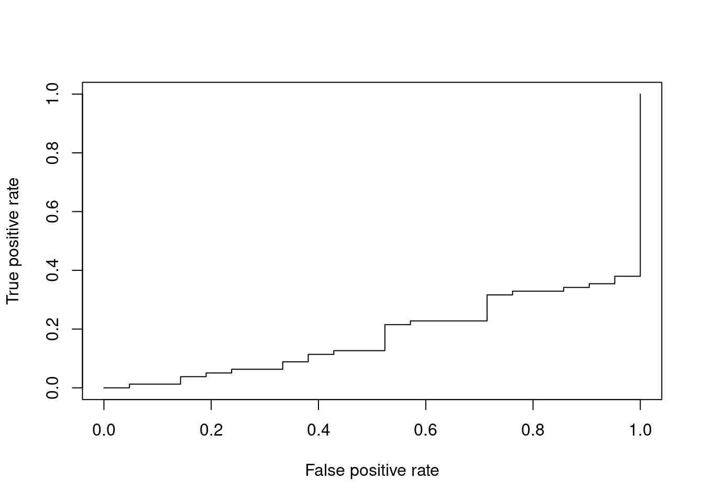
performance(pred, "auc")@y.values # AUROC## [[1]]
## [1] 0.17359864.2 분류 분석
분류 분석은 반응변수의 속성값에 대해 다양한 변수를 이용하여 모형을 구축하고 이를 사용해 새로운 자료에 대한 예측 및 분류를 수행하는 분석이다. 반응변수가 범주형인 경우의 예측 모형은 새로 입력되는 자료에 대한 분류가 주목적이며, 반응변수가 연속형인 경우에는 그 값을 예측하는 것이 주목적이다. 예측 민 분류 기법은 목표 마케팅, 성과예측, 의학진단, 사기검출, 제조 등 다양한 분야에 이용되고 있다.
4.2.1 로지스틱 회귀분석
- 로지스틱 회귀모형은 반응변수가 범주형인 경우에 적용되는 회귀분석 모형이다. 이 방법은 새로운 설명변수의 값이 주어질 때 반응변수의 각 범주에 속할 확률이 얼마인지를 추정하여, 추정 확률을 기준치에 따라분류하는 목적으로 활용된다. 이 때, 모형의 적합을 통해 추정된 확률을 사후확률 (Posterior Probability)라고 한다.
- 반응변수 y에 대한 다중 로지스틱 회귀모형은 다음과 같다.
- 로지스틱 회귀모형은 오즈(odds)의 관점에서 해석이 가능하다. exp(\(\beta_{1}\))의 의미는 나머지 변수(x1, …,xk)가 주어질 때, 한단위 증가할 때마다 성공(y=1)의 오즈가 몇 배 증가하는지를 나타내는 값이다.
- 오즈비(odds ratio) : 오즈는 성공할 확률이 실패할 확률의 몇배인지를 나타내는 확률이며, 오즈비는 오즈의 비율이다.
4.2.1.1 R을 이용한 이항 로지스틱 회귀분석
[함수사용법]
glm(formula, data, family="binomial"...)| 인자 | 설명 |
|---|---|
| formula | 수식(종속변수~독립변수) |
| data | 분석하고자 하는 데이터 |
| family | 분석에 따른 link function 선택, binomial(이항), gaussian(가우시안), Gamma(감마), poisson(포아송) 등이 있음. |
predict(model, newdata, type, ...)| 인자 | 설명 |
|---|---|
| model | 개발한 모형 |
| newdata | 예측을 수행할 test 데이터 |
| type | 예측 결과의 유형 지정, link(log-odds값), class(범주형(factor)값), response(0~1 확률값) |
Q. credit 데이터를 분할하고, train 데이터로 로지스틱 회귀모델을 만들어 보자.
credit<-read.csv("./data/credit_final.csv")
class(credit$credit.rating) # 종속변수 factor 변환## [1] "integer"credit$credit.rating<-factor(credit$credit.rating)
str(credit)## 'data.frame': 1000 obs. of 21 variables:
## $ credit.rating : Factor w/ 2 levels "0","1": 2 2 2 2 2 2 2 2 2 2 ...
## $ account.balance : int 1 1 2 1 1 1 1 1 3 2 ...
## $ credit.duration.months : int 18 9 12 12 12 10 8 6 18 24 ...
## $ previous.credit.payment.status: int 3 3 2 3 3 3 3 3 3 2 ...
## $ credit.purpose : int 2 4 4 4 4 4 4 4 3 3 ...
## $ credit.amount : int 1049 2799 841 2122 2171 2241 3398 1361 1098 3758 ...
## $ savings : int 1 1 2 1 1 1 1 1 1 3 ...
## $ employment.duration : int 1 2 3 2 2 1 3 1 1 1 ...
## $ installment.rate : int 4 2 2 3 4 1 1 2 4 1 ...
## $ marital.status : int 1 3 1 3 3 3 3 3 1 1 ...
## $ guarantor : int 1 1 1 1 1 1 1 1 1 1 ...
## $ residence.duration : int 4 2 4 2 4 3 4 4 4 4 ...
## $ current.assets : int 2 1 1 1 2 1 1 1 3 4 ...
## $ age : int 21 36 23 39 38 48 39 40 65 23 ...
## $ other.credits : int 2 2 2 2 1 2 2 2 2 2 ...
## $ apartment.type : int 1 1 1 1 2 1 2 2 2 1 ...
## $ bank.credits : int 1 2 1 2 2 2 2 1 2 1 ...
## $ occupation : int 3 3 2 2 2 2 2 2 1 1 ...
## $ dependents : int 1 2 1 2 1 2 1 2 1 1 ...
## $ telephone : int 1 1 1 1 1 1 1 1 1 1 ...
## $ foreign.worker : int 1 1 1 2 2 2 2 2 1 1 ...set.seed(123)
idx<-sample(1:nrow(credit), nrow(credit)*0.7, replace=FALSE)
train<-credit[idx,]
test<-credit[-idx,]
logistic<-glm(credit.rating~.,data=train,family="binomial")
summary(logistic)##
## Call:
## glm(formula = credit.rating ~ ., family = "binomial", data = train)
##
## Deviance Residuals:
## Min 1Q Median 3Q Max
## -2.4763 -0.7811 0.4133 0.7147 2.0078
##
## Coefficients:
## Estimate Std. Error z value Pr(>|z|)
## (Intercept) -4.249e+00 1.419e+00 -2.994 0.002754 **
## account.balance 8.687e-01 1.224e-01 7.096 1.28e-12 ***
## credit.duration.months -2.145e-02 1.072e-02 -2.000 0.045501 *
## previous.credit.payment.status 5.635e-01 1.897e-01 2.971 0.002973 **
## credit.purpose -4.133e-01 1.111e-01 -3.721 0.000198 ***
## credit.amount -7.722e-05 5.011e-05 -1.541 0.123341
## savings 3.531e-01 9.689e-02 3.645 0.000268 ***
## employment.duration 1.311e-01 1.003e-01 1.307 0.191067
## installment.rate -1.986e-01 1.002e-01 -1.983 0.047357 *
## marital.status 1.724e-01 9.722e-02 1.774 0.076139 .
## guarantor 6.995e-01 3.548e-01 1.971 0.048679 *
## residence.duration -2.940e-02 9.385e-02 -0.313 0.754063
## current.assets -2.963e-01 1.075e-01 -2.757 0.005828 **
## age 1.587e-02 1.009e-02 1.573 0.115623
## other.credits 4.845e-01 2.480e-01 1.953 0.050801 .
## apartment.type 4.437e-01 2.061e-01 2.152 0.031369 *
## bank.credits -2.773e-01 2.391e-01 -1.160 0.246186
## occupation -1.608e-01 1.672e-01 -0.962 0.335964
## dependents -1.087e-01 2.831e-01 -0.384 0.700955
## telephone 4.068e-01 2.257e-01 1.803 0.071425 .
## foreign.worker 1.433e+00 8.141e-01 1.760 0.078390 .
## ---
## Signif. codes: 0 '***' 0.001 '**' 0.01 '*' 0.05 '.' 0.1 ' ' 1
##
## (Dispersion parameter for binomial family taken to be 1)
##
## Null deviance: 846.57 on 699 degrees of freedom
## Residual deviance: 651.47 on 679 degrees of freedom
## AIC: 693.47
##
## Number of Fisher Scoring iterations: 5- 회귀계수의 p-value가 유의수준 0.05보다 높게 나타나는 변수가 많으므로, step 함수에서 단계적 선택법을 이용하여 로지스틱 회귀분석을 다시 실시한다.
step.logistic<-step(glm(credit.rating~1, data=train, family="binomial"),
scope=list(lower~1, upper=~account.balance+credit.duration.months+previous.credit.payment.status+credit.purpose+credit.amount+savings+employment.duration+installment.rate+marital.status+guarantor+residence.duration+current.assets+age+other.credits+apartment.type+bank.credits+occupation+dependents+telephone+foreign.worker), direction="both")## Start: AIC=848.57
## credit.rating ~ 1
##
## Df Deviance AIC
## + account.balance 1 761.97 765.97
## + savings 1 817.12 821.12
## + credit.duration.months 1 818.40 822.40
## + previous.credit.payment.status 1 821.29 825.29
## + current.assets 1 832.86 836.86
## + credit.amount 1 835.30 839.30
## + age 1 835.37 839.37
## + credit.purpose 1 837.72 841.72
## + employment.duration 1 837.80 841.80
## + other.credits 1 839.28 843.28
## + foreign.worker 1 839.45 843.45
## + installment.rate 1 842.94 846.94
## + marital.status 1 843.24 847.24
## + telephone 1 843.75 847.75
## + apartment.type 1 844.24 848.24
## <none> 846.57 848.57
## + occupation 1 845.33 849.33
## + guarantor 1 845.60 849.60
## + bank.credits 1 845.79 849.79
## + dependents 1 846.34 850.34
## + residence.duration 1 846.39 850.39
##
## Step: AIC=765.97
## credit.rating ~ account.balance
##
## Df Deviance AIC
## + credit.duration.months 1 738.84 744.84
## + previous.credit.payment.status 1 747.38 753.38
## + current.assets 1 748.44 754.44
## + savings 1 749.48 755.48
## + foreign.worker 1 751.18 757.18
## + credit.purpose 1 751.40 757.40
## + age 1 752.09 758.09
## + credit.amount 1 752.24 758.24
## + other.credits 1 754.34 760.34
## + employment.duration 1 756.99 762.99
## + guarantor 1 757.16 763.16
## + marital.status 1 759.13 765.13
## + installment.rate 1 759.48 765.48
## <none> 761.97 765.97
## + occupation 1 760.38 766.38
## + apartment.type 1 760.65 766.65
## + telephone 1 760.86 766.86
## + residence.duration 1 760.91 766.91
## + dependents 1 761.72 767.72
## + bank.credits 1 761.95 767.95
## - account.balance 1 846.57 848.57
##
## Step: AIC=744.84
## credit.rating ~ account.balance + credit.duration.months
##
## Df Deviance AIC
## + previous.credit.payment.status 1 724.73 732.73
## + savings 1 725.43 733.43
## + credit.purpose 1 727.04 735.04
## + age 1 730.32 738.32
## + foreign.worker 1 731.34 739.34
## + employment.duration 1 732.40 740.40
## + current.assets 1 733.16 741.16
## + other.credits 1 733.23 741.23
## + guarantor 1 733.69 741.69
## + marital.status 1 734.34 742.34
## + apartment.type 1 735.60 743.60
## + telephone 1 735.74 743.74
## + installment.rate 1 736.81 744.81
## <none> 738.84 744.84
## + residence.duration 1 737.75 745.75
## + occupation 1 738.60 746.60
## + dependents 1 738.69 746.69
## + bank.credits 1 738.81 746.81
## + credit.amount 1 738.84 746.84
## - credit.duration.months 1 761.97 765.97
## - account.balance 1 818.40 822.40
##
## Step: AIC=732.73
## credit.rating ~ account.balance + credit.duration.months + previous.credit.payment.status
##
## Df Deviance AIC
## + savings 1 709.53 719.53
## + credit.purpose 1 713.08 723.08
## + foreign.worker 1 717.65 727.65
## + guarantor 1 718.72 728.72
## + age 1 719.12 729.12
## + current.assets 1 719.90 729.90
## + employment.duration 1 720.59 730.59
## + other.credits 1 720.85 730.85
## + bank.credits 1 721.21 731.21
## + marital.status 1 721.60 731.60
## + apartment.type 1 722.13 732.13
## + telephone 1 722.61 732.61
## + installment.rate 1 722.70 732.70
## <none> 724.73 732.73
## + residence.duration 1 724.10 734.10
## + occupation 1 724.21 734.21
## + dependents 1 724.63 734.63
## + credit.amount 1 724.70 734.70
## - previous.credit.payment.status 1 738.84 744.84
## - credit.duration.months 1 747.38 753.38
## - account.balance 1 793.25 799.25
##
## Step: AIC=719.53
## credit.rating ~ account.balance + credit.duration.months + previous.credit.payment.status +
## savings
##
## Df Deviance AIC
## + credit.purpose 1 697.86 709.86
## + guarantor 1 701.87 713.87
## + foreign.worker 1 703.31 715.31
## + current.assets 1 704.12 716.12
## + age 1 704.83 716.83
## + other.credits 1 705.56 717.56
## + marital.status 1 705.89 717.89
## + employment.duration 1 706.35 718.35
## + apartment.type 1 706.49 718.49
## + bank.credits 1 706.94 718.94
## + installment.rate 1 707.42 719.42
## <none> 709.53 719.53
## + telephone 1 708.50 720.50
## + occupation 1 709.13 721.13
## + residence.duration 1 709.29 721.29
## + dependents 1 709.40 721.40
## + credit.amount 1 709.43 721.43
## - savings 1 724.73 732.73
## - previous.credit.payment.status 1 725.43 733.43
## - credit.duration.months 1 733.39 741.39
## - account.balance 1 760.85 768.85
##
## Step: AIC=709.86
## credit.rating ~ account.balance + credit.duration.months + previous.credit.payment.status +
## savings + credit.purpose
##
## Df Deviance AIC
## + current.assets 1 690.41 704.41
## + foreign.worker 1 690.93 704.93
## + guarantor 1 690.96 704.96
## + age 1 692.75 706.75
## + marital.status 1 692.89 706.89
## + employment.duration 1 694.44 708.44
## + apartment.type 1 694.56 708.56
## + other.credits 1 694.89 708.89
## <none> 697.86 709.86
## + bank.credits 1 696.00 710.00
## + installment.rate 1 696.12 710.12
## + occupation 1 696.52 710.52
## + telephone 1 696.92 710.92
## + credit.amount 1 697.40 711.40
## + dependents 1 697.63 711.63
## + residence.duration 1 697.77 711.77
## - credit.purpose 1 709.53 719.53
## - savings 1 713.08 723.08
## - previous.credit.payment.status 1 713.72 723.72
## - credit.duration.months 1 722.75 732.75
## - account.balance 1 751.20 761.20
##
## Step: AIC=704.41
## credit.rating ~ account.balance + credit.duration.months + previous.credit.payment.status +
## savings + credit.purpose + current.assets
##
## Df Deviance AIC
## + apartment.type 1 682.70 698.70
## + age 1 683.31 699.31
## + foreign.worker 1 684.57 700.57
## + guarantor 1 684.94 700.94
## + marital.status 1 685.00 701.00
## + employment.duration 1 686.34 702.34
## + other.credits 1 688.09 704.09
## + telephone 1 688.35 704.35
## <none> 690.41 704.41
## + bank.credits 1 688.64 704.64
## + installment.rate 1 689.04 705.04
## + occupation 1 690.02 706.02
## + residence.duration 1 690.11 706.11
## + dependents 1 690.13 706.13
## + credit.amount 1 690.34 706.34
## - current.assets 1 697.86 709.86
## - credit.purpose 1 704.12 716.12
## - previous.credit.payment.status 1 705.30 717.30
## - savings 1 706.36 718.36
## - credit.duration.months 1 706.49 718.49
## - account.balance 1 744.08 756.08
##
## Step: AIC=698.7
## credit.rating ~ account.balance + credit.duration.months + previous.credit.payment.status +
## savings + credit.purpose + current.assets + apartment.type
##
## Df Deviance AIC
## + foreign.worker 1 676.21 694.21
## + guarantor 1 677.12 695.12
## + age 1 678.76 696.76
## + marital.status 1 679.37 697.37
## + employment.duration 1 679.61 697.61
## + other.credits 1 679.81 697.81
## + installment.rate 1 680.47 698.47
## + telephone 1 680.58 698.58
## <none> 682.70 698.70
## + bank.credits 1 681.07 699.07
## + occupation 1 682.35 700.35
## + residence.duration 1 682.39 700.39
## + dependents 1 682.63 700.63
## + credit.amount 1 682.63 700.63
## - apartment.type 1 690.41 704.41
## - current.assets 1 694.56 708.56
## - previous.credit.payment.status 1 696.22 710.22
## - credit.purpose 1 697.55 711.55
## - savings 1 699.58 713.58
## - credit.duration.months 1 700.14 714.14
## - account.balance 1 735.18 749.18
##
## Step: AIC=694.21
## credit.rating ~ account.balance + credit.duration.months + previous.credit.payment.status +
## savings + credit.purpose + current.assets + apartment.type +
## foreign.worker
##
## Df Deviance AIC
## + guarantor 1 672.46 692.46
## + age 1 672.50 692.50
## + other.credits 1 673.01 693.01
## + employment.duration 1 673.02 693.02
## + marital.status 1 673.43 693.43
## + telephone 1 673.89 693.89
## <none> 676.21 694.21
## + installment.rate 1 674.68 694.68
## + bank.credits 1 674.79 694.79
## + residence.duration 1 675.92 695.92
## + occupation 1 675.94 695.94
## + credit.amount 1 675.98 695.98
## + dependents 1 676.17 696.17
## - foreign.worker 1 682.70 698.70
## - apartment.type 1 684.57 700.57
## - current.assets 1 687.01 703.01
## - previous.credit.payment.status 1 689.51 705.51
## - credit.duration.months 1 691.63 707.63
## - credit.purpose 1 691.85 707.85
## - savings 1 692.44 708.44
## - account.balance 1 730.93 746.93
##
## Step: AIC=692.46
## credit.rating ~ account.balance + credit.duration.months + previous.credit.payment.status +
## savings + credit.purpose + current.assets + apartment.type +
## foreign.worker + guarantor
##
## Df Deviance AIC
## + age 1 668.86 690.86
## + other.credits 1 669.00 691.00
## + employment.duration 1 669.15 691.15
## + marital.status 1 669.93 691.93
## + telephone 1 670.01 692.01
## <none> 672.46 692.46
## + bank.credits 1 670.79 692.79
## + installment.rate 1 671.11 693.11
## + credit.amount 1 672.07 694.07
## + occupation 1 672.19 694.19
## + residence.duration 1 672.20 694.20
## - guarantor 1 676.21 694.21
## + dependents 1 672.43 694.43
## - foreign.worker 1 677.12 695.12
## - apartment.type 1 680.81 698.81
## - current.assets 1 682.08 700.08
## - previous.credit.payment.status 1 686.53 704.53
## - credit.purpose 1 687.00 705.00
## - credit.duration.months 1 688.83 706.83
## - savings 1 689.97 707.97
## - account.balance 1 729.18 747.18
##
## Step: AIC=690.86
## credit.rating ~ account.balance + credit.duration.months + previous.credit.payment.status +
## savings + credit.purpose + current.assets + apartment.type +
## foreign.worker + guarantor + age
##
## Df Deviance AIC
## + other.credits 1 665.40 689.40
## + marital.status 1 666.21 690.21
## + bank.credits 1 666.82 690.82
## <none> 668.86 690.86
## + telephone 1 666.95 690.95
## + employment.duration 1 667.09 691.09
## + installment.rate 1 667.18 691.18
## - age 1 672.46 692.46
## + credit.amount 1 668.46 692.46
## - guarantor 1 672.50 692.50
## + occupation 1 668.56 692.56
## + dependents 1 668.86 692.86
## + residence.duration 1 668.86 692.86
## - foreign.worker 1 673.34 693.34
## - apartment.type 1 673.96 693.96
## - current.assets 1 678.94 698.94
## - previous.credit.payment.status 1 680.46 700.46
## - credit.duration.months 1 683.44 703.44
## - credit.purpose 1 683.80 703.80
## - savings 1 685.13 705.13
## - account.balance 1 726.24 746.24
##
## Step: AIC=689.4
## credit.rating ~ account.balance + credit.duration.months + previous.credit.payment.status +
## savings + credit.purpose + current.assets + apartment.type +
## foreign.worker + guarantor + age + other.credits
##
## Df Deviance AIC
## + marital.status 1 662.52 688.52
## <none> 665.40 689.40
## + telephone 1 663.54 689.54
## + employment.duration 1 663.56 689.56
## + installment.rate 1 663.60 689.60
## + bank.credits 1 663.93 689.93
## + credit.amount 1 664.86 690.86
## - other.credits 1 668.86 690.86
## + occupation 1 664.96 690.96
## - age 1 669.00 691.00
## - guarantor 1 669.27 691.27
## + dependents 1 665.39 691.39
## + residence.duration 1 665.39 691.39
## - foreign.worker 1 670.15 692.15
## - apartment.type 1 671.10 693.10
## - current.assets 1 674.92 696.92
## - previous.credit.payment.status 1 675.51 697.51
## - credit.purpose 1 678.94 700.94
## - credit.duration.months 1 679.13 701.13
## - savings 1 681.77 703.77
## - account.balance 1 723.42 745.42
##
## Step: AIC=688.52
## credit.rating ~ account.balance + credit.duration.months + previous.credit.payment.status +
## savings + credit.purpose + current.assets + apartment.type +
## foreign.worker + guarantor + age + other.credits + marital.status
##
## Df Deviance AIC
## + installment.rate 1 659.86 687.86
## <none> 662.52 688.52
## + telephone 1 660.70 688.70
## + bank.credits 1 661.03 689.03
## + employment.duration 1 661.22 689.22
## - marital.status 1 665.40 689.40
## + credit.amount 1 662.07 690.07
## - guarantor 1 666.10 690.10
## + occupation 1 662.11 690.11
## - other.credits 1 666.21 690.21
## - age 1 666.25 690.25
## + dependents 1 662.49 690.49
## - apartment.type 1 666.51 690.51
## + residence.duration 1 662.52 690.52
## - foreign.worker 1 666.90 690.90
## - current.assets 1 671.86 695.86
## - previous.credit.payment.status 1 671.87 695.87
## - credit.purpose 1 676.96 700.96
## - credit.duration.months 1 677.03 701.03
## - savings 1 679.14 703.14
## - account.balance 1 720.47 744.47
##
## Step: AIC=687.86
## credit.rating ~ account.balance + credit.duration.months + previous.credit.payment.status +
## savings + credit.purpose + current.assets + apartment.type +
## foreign.worker + guarantor + age + other.credits + marital.status +
## installment.rate
##
## Df Deviance AIC
## <none> 659.86 687.86
## + credit.amount 1 657.88 687.88
## + telephone 1 658.20 688.20
## + bank.credits 1 658.44 688.44
## + employment.duration 1 658.44 688.44
## - installment.rate 1 662.52 688.52
## - guarantor 1 663.09 689.09
## - foreign.worker 1 663.52 689.52
## + occupation 1 659.54 689.54
## - marital.status 1 663.60 689.60
## - other.credits 1 663.74 689.74
## + dependents 1 659.77 689.77
## + residence.duration 1 659.85 689.85
## - age 1 664.07 690.07
## - apartment.type 1 664.22 690.22
## - previous.credit.payment.status 1 668.62 694.62
## - current.assets 1 669.29 695.29
## - credit.purpose 1 673.93 699.93
## - credit.duration.months 1 674.24 700.24
## - savings 1 676.80 702.80
## - account.balance 1 716.56 742.56summary(step.logistic)##
## Call:
## glm(formula = credit.rating ~ account.balance + credit.duration.months +
## previous.credit.payment.status + savings + credit.purpose +
## current.assets + apartment.type + foreign.worker + guarantor +
## age + other.credits + marital.status + installment.rate,
## family = "binomial", data = train)
##
## Deviance Residuals:
## Min 1Q Median 3Q Max
## -2.4734 -0.8128 0.4436 0.7404 1.8425
##
## Coefficients:
## Estimate Std. Error z value Pr(>|z|)
## (Intercept) -4.453085 1.295853 -3.436 0.000589 ***
## account.balance 0.877274 0.120850 7.259 3.89e-13 ***
## credit.duration.months -0.030855 0.008188 -3.768 0.000164 ***
## previous.credit.payment.status 0.484631 0.165356 2.931 0.003381 **
## savings 0.377087 0.095484 3.949 7.84e-05 ***
## credit.purpose -0.395226 0.108290 -3.650 0.000263 ***
## current.assets -0.314207 0.103329 -3.041 0.002359 **
## apartment.type 0.423587 0.202868 2.088 0.036798 *
## foreign.worker 1.371175 0.809628 1.694 0.090344 .
## guarantor 0.608202 0.347239 1.752 0.079853 .
## age 0.019056 0.009441 2.018 0.043540 *
## other.credits 0.483427 0.243663 1.984 0.047256 *
## marital.status 0.181255 0.093959 1.929 0.053720 .
## installment.rate -0.146927 0.090550 -1.623 0.104674
## ---
## Signif. codes: 0 '***' 0.001 '**' 0.01 '*' 0.05 '.' 0.1 ' ' 1
##
## (Dispersion parameter for binomial family taken to be 1)
##
## Null deviance: 846.57 on 699 degrees of freedom
## Residual deviance: 659.86 on 686 degrees of freedom
## AIC: 687.86
##
## Number of Fisher Scoring iterations: 5- 총 20개의 독립변수 중 13개의 독립변수가 선택되었으며, *과 .은 각 유의확률에서 채택이 되는지를 알 수 있다. 로지스틱 회귀식은 아래와 같이 나타난다.
\(P(credit.rating)=\frac{1}{1+exp[-(-1.45+0.88account.balance+...-0.15installment.rate)]}\) - estimate가 양수이면 독립변수가 1단위 증가할 때 확률이 1에 가까워지고, estimate가 음수이면 독립변수가 1단위 증가할 때 확률이 0에 가까워진다.
library(caret)
(pred<-predict(step.logistic, test[,-1], type="response")) # 예측값을 "response"로 지정하여 확률값을 출력## 1 3 4 7 9 12 15 17
## 0.4120408 0.6118378 0.8287752 0.9181769 0.8756254 0.6843918 0.6123956 0.7257466
## 18 21 22 25 27 28 32 35
## 0.8545862 0.6562587 0.8187122 0.9117270 0.3548313 0.8912199 0.6963481 0.5354274
## 42 43 44 47 50 58 60 62
## 0.5585623 0.8364706 0.7470300 0.7531220 0.5600975 0.8353797 0.8895306 0.7449967
## 63 66 70 73 75 77 82 86
## 0.9429548 0.9387643 0.8516873 0.8224228 0.9481515 0.9478558 0.9323424 0.6739541
## 92 93 97 99 101 102 103 107
## 0.7073080 0.2550983 0.8217615 0.6815670 0.9686422 0.2506009 0.7734371 0.9082236
## 109 112 114 123 126 133 140 142
## 0.5705113 0.5738746 0.8735354 0.6018558 0.9023466 0.9552089 0.9404364 0.9864618
## 144 145 146 147 149 150 154 156
## 0.9329562 0.7825584 0.9806404 0.7563203 0.7958647 0.7759120 0.5112201 0.8989627
## 157 174 176 182 183 192 194 198
## 0.2000154 0.6635239 0.8362179 0.7691743 0.2697873 0.7822958 0.9230847 0.7904401
## 202 208 213 214 215 216 227 233
## 0.9506486 0.8442133 0.4700817 0.9926162 0.8831600 0.9248918 0.4090421 0.8773947
## 245 247 248 249 253 254 257 269
## 0.9013957 0.8224225 0.9496794 0.7450681 0.8175941 0.6385456 0.6716667 0.8695574
## 272 283 285 288 293 296 300 307
## 0.9139702 0.9389755 0.3110148 0.9274089 0.9865352 0.7869555 0.9441139 0.7054924
## 312 313 314 321 325 329 335 345
## 0.9424433 0.9347673 0.4857308 0.9393010 0.9600646 0.9739688 0.9446268 0.8643433
## 350 353 354 356 359 360 361 363
## 0.8665074 0.7143366 0.6647453 0.9745540 0.6030884 0.9571675 0.9343947 0.9881441
## 366 367 368 369 370 375 380 383
## 0.8746333 0.8839657 0.6299201 0.1938767 0.4109438 0.9539802 0.9581369 0.8369876
## 385 387 400 405 408 410 411 416
## 0.9426122 0.7129784 0.6004036 0.7937358 0.6749529 0.8698886 0.9479245 0.7891121
## 423 425 432 436 439 444 449 453
## 0.8673777 0.8854057 0.9597774 0.9703585 0.2658115 0.9508754 0.8628265 0.6940124
## 454 460 462 467 469 472 474 482
## 0.6250801 0.9624819 0.7661106 0.9162244 0.3083106 0.8821974 0.9332950 0.7324789
## 484 485 486 487 488 489 491 493
## 0.9949158 0.9599063 0.8572638 0.8723732 0.9409401 0.8786549 0.8639081 0.1861704
## 495 496 497 502 506 511 513 514
## 0.8758798 0.8549234 0.8996813 0.8678649 0.9368716 0.9470541 0.5835893 0.7205346
## 515 517 518 520 521 525 529 531
## 0.7173306 0.5639953 0.5906169 0.7641548 0.6460617 0.8607718 0.7875209 0.9619511
## 536 540 542 543 546 550 551 556
## 0.3886664 0.4620445 0.6683025 0.7880538 0.7462993 0.9224374 0.5281521 0.6557149
## 563 565 568 569 572 576 579 580
## 0.2330092 0.8570038 0.8865552 0.9570444 0.9035184 0.4413908 0.6281038 0.3626785
## 582 583 584 586 587 592 594 599
## 0.6094103 0.8412318 0.4426206 0.6207627 0.5037450 0.4947543 0.1509256 0.6393267
## 607 611 616 622 628 631 635 641
## 0.9444137 0.4469861 0.4350562 0.6942851 0.9373949 0.4534486 0.1898027 0.6636863
## 642 643 652 653 654 656 664 669
## 0.4613032 0.6911431 0.9049479 0.8419885 0.9659676 0.8858289 0.6496323 0.8331154
## 674 675 683 684 689 690 693 695
## 0.8500149 0.7906134 0.9087419 0.9736985 0.8522894 0.3264172 0.7586834 0.8787157
## 699 701 708 713 715 728 730 731
## 0.7674790 0.7948799 0.8674318 0.9289444 0.8646000 0.7547228 0.7213844 0.5971793
## 735 736 737 740 743 748 749 756
## 0.5683151 0.9734926 0.6673813 0.6835835 0.7376732 0.8792291 0.7720190 0.1485896
## 758 759 763 772 773 776 786 787
## 0.1935449 0.2411321 0.7705442 0.3751020 0.6321914 0.1383704 0.8161353 0.5249610
## 790 791 793 795 796 797 799 801
## 0.5824022 0.3912481 0.3479640 0.8999023 0.3893990 0.9279937 0.2878022 0.5014722
## 806 808 825 826 827 828 829 830
## 0.1469686 0.2080182 0.2501811 0.7994888 0.2773739 0.6401503 0.6154802 0.4419988
## 833 839 848 849 850 855 856 866
## 0.7936517 0.4876081 0.1777989 0.6991339 0.7273259 0.9482981 0.1826371 0.9643884
## 868 874 875 879 884 887 892 896
## 0.6638910 0.6762806 0.2602226 0.3118001 0.5363162 0.2179213 0.5033415 0.7543552
## 897 898 901 907 909 912 914 919
## 0.9062067 0.5762438 0.5157371 0.2894535 0.6484000 0.5229902 0.1543145 0.2554326
## 921 924 929 936 939 945 946 948
## 0.2209400 0.3185682 0.3902414 0.7428232 0.4296006 0.6761346 0.5554851 0.9205723
## 950 952 956 963 964 967 970 971
## 0.9513133 0.9508658 0.6010311 0.1464600 0.3378311 0.6942551 0.3984775 0.4066565
## 972 973 977 978 983 984 985 989
## 0.2523158 0.9263933 0.4497004 0.4379014 0.5426059 0.1238137 0.6028227 0.2606977
## 993 995 997 998
## 0.9482636 0.2613449 0.5866442 0.9168300pred1<-as.data.frame(pred)
pred1$grade<-ifelse(pred1$pred<0.5, pred1$grade<-0, pred1$grade<-1)
confusionMatrix(data=as.factor(pred1$grade), reference=test[,1], positive='1')## Confusion Matrix and Statistics
##
## Reference
## Prediction 0 1
## 0 43 23
## 1 52 182
##
## Accuracy : 0.75
## 95% CI : (0.697, 0.798)
## No Information Rate : 0.6833
## P-Value [Acc > NIR] : 0.006892
##
## Kappa : 0.3708
##
## Mcnemar's Test P-Value : 0.001224
##
## Sensitivity : 0.8878
## Specificity : 0.4526
## Pos Pred Value : 0.7778
## Neg Pred Value : 0.6515
## Prevalence : 0.6833
## Detection Rate : 0.6067
## Detection Prevalence : 0.7800
## Balanced Accuracy : 0.6702
##
## 'Positive' Class : 1
## - 구축된 로지스틱 회귀모형으로 test 데이터의 기존 credit.rating 열을 제외한 데이터로 예측을 한다. 정분류율을 확인하기 전에 예측값이 확률로 나타나기 때문에 기준이 되는 확률보다 크면 1, 작으면 0으로 범주를 추가한다.
- 정분류율(Accuracy)은 0.75이며, 민감도는 0.8878로 높게 나타났다. 또 특이도는 0.4526이다. 정확도가 높다고 해서 무조건 좋은 모형은 아니며, 분석 분야에 따라 다양한 지표들을 활용하여 분석 모형을 선택할 수 있다.
install.packages(setdiff("ROCR", rownames(installed.packages())))
library(ROCR)
pred.logistic.roc<-prediction(as.numeric(pred1$grade), as.numeric(test[,1]))
plot(performance(pred.logistic.roc, "tpr", "fpr"))
abline(a=0, b=1, lty=2, col="black")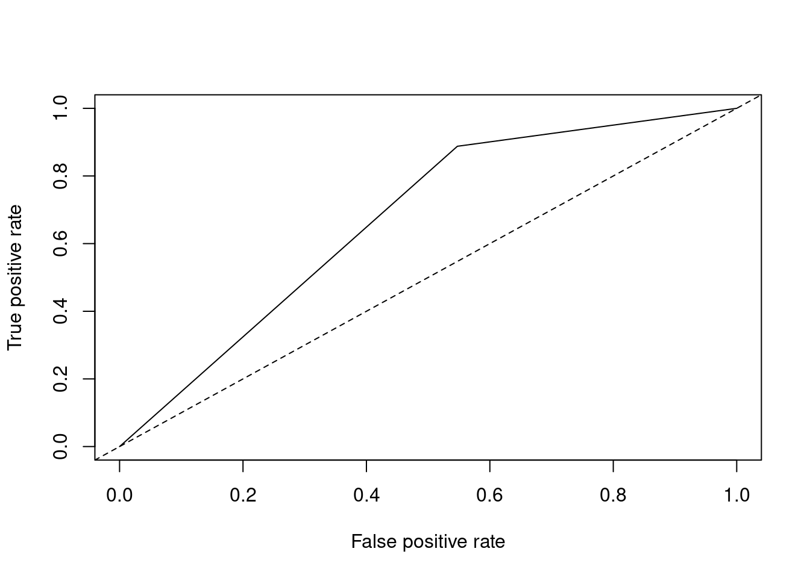
performance(pred.logistic.roc,"auc")@y.values## [[1]]
## [1] 0.6702182- prediction 함수와 performance 함수로 값을 구하여 plot 함수로 ROC 커브를 그렸으며, AUC값은 @y.values값으로 확인할 결과 0.67로 나타났다.
4.2.1.2 R을 이용한 다항 로지스틱 회귀분석
- 예측하고자 하는 분류가 3개 이상이 된다면 다항 로지스틱 회귀분석을 사용한다. R에서는 nnet 패키지의 multinom 등의 함수로 분석을 한다.
multinom(formula, data)Q. iris 데이터의 Species를 분류하는 다항 로지스틱 회귀분석을 실시하고 오분류표를 만들어 보자.
idx<-sample(1:nrow(iris), nrow(iris)*0.7, replace=FALSE)
train.iris<-iris[idx,]
test.iris<-iris[-idx,]
library(nnet)
mul.iris<-multinom(Species~., train.iris)## # weights: 21 (12 variable)
## initial value 115.354290
## iter 10 value 11.770297
## iter 20 value 6.059059
## iter 30 value 5.722903
## iter 40 value 5.717299
## iter 50 value 5.710495
## iter 60 value 5.709390
## iter 70 value 5.708363
## iter 80 value 5.706817
## iter 90 value 5.706767
## iter 100 value 5.706668
## final value 5.706668
## stopped after 100 iterations# 예측을 통한 정분류율 확인
pred.mul<-predict(mul.iris, test.iris[,-5])
confusionMatrix(pred.mul, test.iris[,5])## Confusion Matrix and Statistics
##
## Reference
## Prediction setosa versicolor virginica
## setosa 15 0 0
## versicolor 0 10 0
## virginica 0 0 20
##
## Overall Statistics
##
## Accuracy : 1
## 95% CI : (0.9213, 1)
## No Information Rate : 0.4444
## P-Value [Acc > NIR] : < 2.2e-16
##
## Kappa : 1
##
## Mcnemar's Test P-Value : NA
##
## Statistics by Class:
##
## Class: setosa Class: versicolor Class: virginica
## Sensitivity 1.0000 1.0000 1.0000
## Specificity 1.0000 1.0000 1.0000
## Pos Pred Value 1.0000 1.0000 1.0000
## Neg Pred Value 1.0000 1.0000 1.0000
## Prevalence 0.3333 0.2222 0.4444
## Detection Rate 0.3333 0.2222 0.4444
## Detection Prevalence 0.3333 0.2222 0.4444
## Balanced Accuracy 1.0000 1.0000 1.00004.2.2 의사결정나무
- 의사결정나무는 분류함수를 의사결정 규칙으로 이뤄진 나무 모양으로 그리는 방법이다. 계산 결과가 의사결정나무에 직접 나타나기 때문에 해석이 간편하다.
- 의사결정나무는 주어진 입력값에 대하여 출력값을 예측하는 모형으로 분류나무와 회귀나무 모형이 있다.
4.2.2.1 의사결정나무의 분석 과정
- 의사결정나무의 형성과정은 크게 성장, 가지치기, 타당성 평가, 해석 및 예측으로 이루어진다.
4.2.2.1.1 성장단계
각 마디에서 적절한 최적의 분류규칙을 찾아서 나무를 성장시키는 과정으로 적절한 정지규칙을 만족하면 중단한다.
분리 규칙을 설정하는 분리 기준은 이산형 목표변수, 연속형 목표변수에 따라 나뉘며 아래와 같은 기준값을 사용한다.
이산형 목표변수
| 기준값 | 분리기준 |
|---|---|
| 카이제곱 통계량 p값 | p값이 가장 작은 예측변수와 그때의 최적분리에 의해서 자식마디를 형성 |
| 지니 지수 | 지니 지수를 감소시켜주는 예측변수와 그 때의 최적 분리에 의해서 자식 마디를 형성 |
| 엔트로피 지수 | 엔트로피 지수가 가장 작은 예측 변수와 이 때의 최적분리에 의해 자식 마디를 형성 |
- 연속형 목표변수
| 기준값 | 분리기준 |
|---|---|
| 분산분석에서 F통계량 | p값이 가장 작은 예측변수와 그때의 최적분리에 의해서 자식마디를 형성 |
| 분산의 감소량 | 분산의 감소량을 최대화 하는 기준의 최적분리에 의해서 자식마디를 형성 |
- 정지규칙은 더 이상 분리가 일어나지 않고, 현재의 마디가 끝마디가 되도록 하는 규칙이며, 의사결정나무의 깊이를 지정하거나 끝마디의 레코드 수의 최소 개수를 지정한다.
4.2.2.1.2 가지치기 단계
- 오차를 크게 할 위험이 높거나 부적절한 추론 규칙을 가지고 있는 가지 또는 불필요한 가지를 제거하는 단계이다.
- 나무의 크기를 모형의 복잡도로 볼 수 있으며, 최적의 나무 크기는 자료로부터 추정하게 된다. 일반적으로 사용되는 방법은 마디에 속하는 자료가 일정수 이하일 때 분할을 정지하고 비용-복잡도 가지치기를 이용하여 성장시킨 나무를 가지치기하게 된다.
4.2.2.1.3 타당성 평가 단계
- 이익도표, 위험도표 혹은 시험자료를 이용하여 의사결정나무를 평가하는 단계이다.
4.2.2.1.4 해설 및 예측 단계
- 구축된 나무모형을 해석하고 예측모형을 설정한 후 예측에 적용하는 단계이다.
4.2.2.2 의사결정나무 알고리즘
4.2.2.2.1 CART (Classification and Regression Tree)
4.2.2.2.2 C4.5와 C5.0
4.2.2.2.3 CHAID (SHi-squared Automatic Interaction Detection)
4.2.2.3 R을 이용한 의사결정나무 분석
[함수사용법]
rpart(formula, data, method, control=rpart.control(), ...)Q. 앞서 분할한 credit 데이터의 train 데이터로 의사결정나무 모델을 만들어 보자.
library(rpart)
library(rpart.plot)
dt.model<-rpart(credit.rating~., method="class", data=train, control=rpart.control(maxdepth=5, minsplit=15))
prp(dt.model, type=4, extra=2)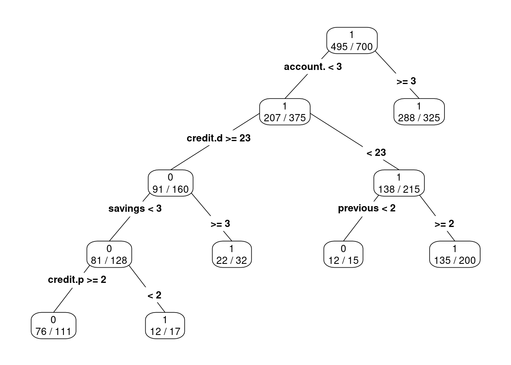
- 총 700개의 관측치 중 495개의 관측치를 1로 분류했으며, account.balance >= 3인 325개의 노드 중 288이 1로 분류되었음을 의미한다. prp 함수는 rpart.plot 패키지에 속한 함수이며, type, extra 등의 인자를 사용하여 그래프의 모양을 바꿀 수 있다.
# rpart 함수를 활용하여 의사결정나무분석 실시 (최적 나무 선정)
dt.model$cptable## CP nsplit rel error xerror xstd
## 1 0.05365854 0 1.0000000 1.0000000 0.05873225
## 2 0.04390244 3 0.8341463 0.9853659 0.05847732
## 3 0.03414634 4 0.7902439 0.9804878 0.05839093
## 4 0.01000000 5 0.7560976 0.9756098 0.05830383(opt<-which.min(dt.model$cptable[,"xerror"]))## 4
## 4(cp<-dt.model$cptable[opt, "CP"])## [1] 0.01(prune.c<-prune(dt.model, cp=cp))## n= 700
##
## node), split, n, loss, yval, (yprob)
## * denotes terminal node
##
## 1) root 700 205 1 (0.2928571 0.7071429)
## 2) account.balance< 2.5 375 168 1 (0.4480000 0.5520000)
## 4) credit.duration.months>=22.5 160 69 0 (0.5687500 0.4312500)
## 8) savings< 2.5 128 47 0 (0.6328125 0.3671875)
## 16) credit.purpose>=1.5 111 35 0 (0.6846847 0.3153153) *
## 17) credit.purpose< 1.5 17 5 1 (0.2941176 0.7058824) *
## 9) savings>=2.5 32 10 1 (0.3125000 0.6875000) *
## 5) credit.duration.months< 22.5 215 77 1 (0.3581395 0.6418605)
## 10) previous.credit.payment.status< 1.5 15 3 0 (0.8000000 0.2000000) *
## 11) previous.credit.payment.status>=1.5 200 65 1 (0.3250000 0.6750000) *
## 3) account.balance>=2.5 325 37 1 (0.1138462 0.8861538) *cptable 인자를 통해서 교차타당성 오차를 제공하여 의사결정나무 모델의 가지치기, 트리의 최대 크기조절에 사용한다. nsplit은 분할횟수, xerror는 해당 CP에서 cross validation 했을 때 오류율, xstd는 해당 CP에서 cross validation 했을 때 편차를 나타낸다. cptable에서 xerror가 가장 낮은 split 개수를 선택한다.
위 결과를 확인했을 때, xerror가 가장 낮을 때 nsplit은 5이며, 앞선 모형의 그래프를 봤을 때 의사 결정나무 모델이 분할을 5번까지 한다고 할 수 있다.
plotcp(dt.model)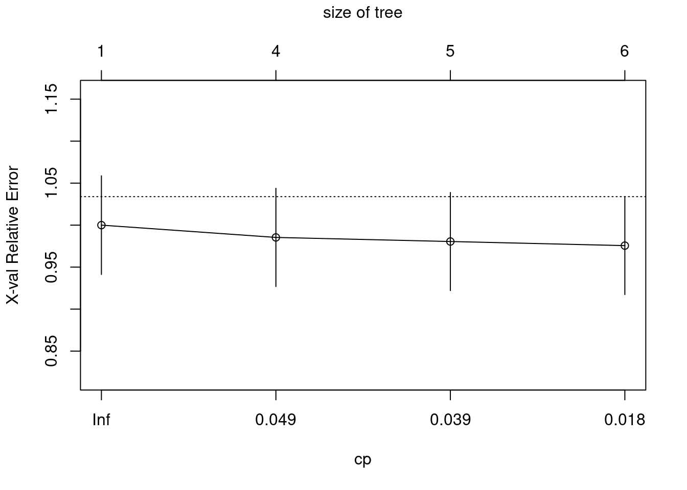
- plotcp의 결과에서도 xerror가 가장 낮을 때 결과에 따라 교차타당성오차를 최소로 하는 트리를 형성한다. 결과적으로 나무의 크기가 6일 때 최적의 나무라고 할 수 있다.
install.packages(setdiff("caret", rownames(installed.packages())))
library(caret)
pred.dt<-predict(dt.model, test[,-1], type="class")
confusionMatrix(data=pred.dt, reference=test[,1], positive='1')## Confusion Matrix and Statistics
##
## Reference
## Prediction 0 1
## 0 42 21
## 1 53 184
##
## Accuracy : 0.7533
## 95% CI : (0.7005, 0.8011)
## No Information Rate : 0.6833
## P-Value [Acc > NIR] : 0.0047614
##
## Kappa : 0.3734
##
## Mcnemar's Test P-Value : 0.0003137
##
## Sensitivity : 0.8976
## Specificity : 0.4421
## Pos Pred Value : 0.7764
## Neg Pred Value : 0.6667
## Prevalence : 0.6833
## Detection Rate : 0.6133
## Detection Prevalence : 0.7900
## Balanced Accuracy : 0.6698
##
## 'Positive' Class : 1
## - 정분류율(Accuracy)은 0.7533며, 민감도는 0.8976로 높게 나타났다. 또, 특이도는 0.4421이다. 정확도가 높다고 해서 무조건 좋은 모형은 아니며, 분석 분야에 따라 다양한 지표들을 활용하여 분석모형을 선택할 수 있다.
# ROC 커브 그리기 및 AUC 산출
install.packages(setdiff("ROCR", rownames(installed.packages())))
library(ROCR)
pred.dt.roc<-prediction(as.numeric(pred.dt), as.numeric(test[,1]))
plot(performance(pred.dt.roc,"tpr", "fpr"))
abline(a=0,b=1,lty=2,col="black")performance(pred.dt.roc,"auc")@y.values## [[1]]
## [1] 0.6698331- prediction 함수와 performance 함수로 값을 구하여 plot 함수로 ROC 커브를 그렸으며, AUC값은 @y.values값으로 확인한 결과 0.6698로 나타났다.
Q. 앞서 분리한 iris 데이터의 Species를 분류하는 의사결정나무분석을 실시하고 오분류표를 만들어 보자.
install.packages(setdiff("rpart", rownames(installed.packages())))
library(rpart)
library(rpart.plot)
dt.model2<-rpart(Species~., data=train.iris)
prp(dt.model2, type=4, extra=2)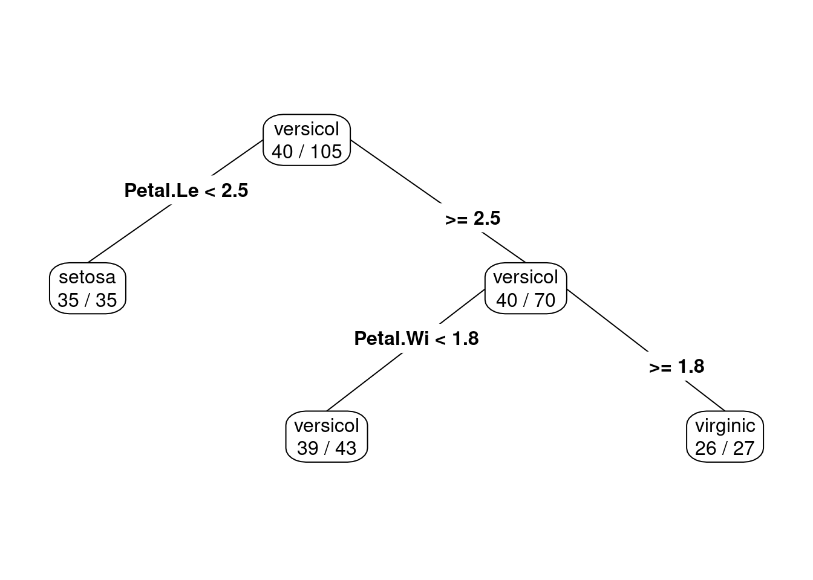
pred.dt2<-predict(dt.model2, test.iris[,-5], type="class")
confusionMatrix(data=pred.dt2, reference=test.iris[,5])## Confusion Matrix and Statistics
##
## Reference
## Prediction setosa versicolor virginica
## setosa 15 0 0
## versicolor 0 10 1
## virginica 0 0 19
##
## Overall Statistics
##
## Accuracy : 0.9778
## 95% CI : (0.8823, 0.9994)
## No Information Rate : 0.4444
## P-Value [Acc > NIR] : 8.12e-15
##
## Kappa : 0.9656
##
## Mcnemar's Test P-Value : NA
##
## Statistics by Class:
##
## Class: setosa Class: versicolor Class: virginica
## Sensitivity 1.0000 1.0000 0.9500
## Specificity 1.0000 0.9714 1.0000
## Pos Pred Value 1.0000 0.9091 1.0000
## Neg Pred Value 1.0000 1.0000 0.9615
## Prevalence 0.3333 0.2222 0.4444
## Detection Rate 0.3333 0.2222 0.4222
## Detection Prevalence 0.3333 0.2444 0.4222
## Balanced Accuracy 1.0000 0.9857 0.97504.2.3 앙상블 기법
- 앙상블 기법은 주어진 자료로부터 여러개의 예측모형들을 만든 후 예측모형들을 조합하여 하나의 최종 예측모형을 만드는 방법이다. 학습방법이 가장 불안전한 의사결정나무에 주로 사용한다.
4.2.3.1 배깅 (Bagging)
4.2.3.1.1 개념
- 주어진 자료에서 여러개의 부트스트랩 자료를 생성하고 각 부트스트랩 자료에 예측모형을 만든후 결합하여 최종 예측모형을 만드는 방법이다.
- 보팅은 여러개의 모형으로부터 산출된 결과 중 다수결에 의해서 최종 결과를 선정하는 과정이다.
- 최적의 의사결정나무를 구축할 때 가장 어려운 부분이 가지치기이지만 배깅에서는 가지치기를 하지 않고 최대로 성정한 의사결정나무들을 활용한다.
- 훈련자료의 모집단의 분포를 모르기 때문에 실제 문제에서는 평균예측모형을 구할 수 없다. 배깅은 이러한 문제를 해결하기 위해 훈련자료를 모집단으로 생각하고 평균예측모형을 구하여 분산을 줄이고 예측력을 향상시킬 수 있다.
4.2.3.1.2 R을 이용한 Bagging 분석
bagging(formula, data, mfinal, control=, ...)| 인자 | 설명 |
|---|---|
| formula | 수식 |
| data | 분석하고자하는 데이터 |
| mfinal | 반복수 또는 사용할 트리의 수 (default=100) |
| control | 의사결정나무를 만들 때 사용할 option을 설정 |
Q. 앞서 분할한 credit 데이터의 train 데이터로 Bagging 모델을 만들어 보자.
install.packages(setdiff("adabag", rownames(installed.packages())))
library(adabag)## Loading required package: foreach## Loading required package: doParallel## Loading required package: iterators## Loading required package: parallelbag<-bagging(credit.rating~., data=train, mfinal=15)
names(bag)## [1] "formula" "trees" "votes" "prob" "class"
## [6] "samples" "importance" "terms" "call"- names 함수를 통해 bagging 함수로 생성된 결과들에 어떤 것들이 있는지 확인이 가능하다. 주로 사용하는 인자들에 대한 설명은 아래와 같다.
- trees: bagging을 통해 생성된 의사결정나무들을 확인할 수 있다.
- votes: 각 의사결정나무들이 1행 데이터에 대해 1 또는 2열의 분류를 가진다는 것에 대한 투표를 진행한 것이다.
- prob: 각 행에 대해 1 또는 2열의 특징으로 분류되는 확률을 나타내는 것이다.
- class: bagging 기법을 활용해 각 행의 분류를 예측한 것이다.
- samples: 각 의사결정나무에 사용된 부트스트랩 데이터의 레코드 번호를 나타낸다.
- importance: 변수의 상대적인 중요도를 나타내며, 지니지수의 gain을 고려한 측도이다.
bag$importance## account.balance age
## 32.1612585 9.6931394
## apartment.type bank.credits
## 0.5240433 0.7862148
## credit.amount credit.duration.months
## 9.5477783 9.9671607
## credit.purpose current.assets
## 4.7106811 4.0205891
## dependents employment.duration
## 0.0000000 2.6329518
## foreign.worker guarantor
## 0.3666136 3.3424176
## installment.rate marital.status
## 1.8668982 1.7141508
## occupation other.credits
## 1.5483235 1.0551176
## previous.credit.payment.status residence.duration
## 6.2876622 3.1676583
## savings telephone
## 5.1833824 1.4239586- importance 인자에서 변수의 상대적 중요도를 봤을 때, account.balance, credit.duration.months, age 순서로 변수 중요도가 크다는 것을 파악할 수 있다.
library(caret)
pred.bg<-predict(bag, test, type="class")
confusionMatrix(data=as.factor(pred.bg$class), reference=test$credit.rating, positive='1')## Confusion Matrix and Statistics
##
## Reference
## Prediction 0 1
## 0 50 31
## 1 45 174
##
## Accuracy : 0.7467
## 95% CI : (0.6935, 0.7949)
## No Information Rate : 0.6833
## P-Value [Acc > NIR] : 0.009816
##
## Kappa : 0.3905
##
## Mcnemar's Test P-Value : 0.135908
##
## Sensitivity : 0.8488
## Specificity : 0.5263
## Pos Pred Value : 0.7945
## Neg Pred Value : 0.6173
## Prevalence : 0.6833
## Detection Rate : 0.5800
## Detection Prevalence : 0.7300
## Balanced Accuracy : 0.6875
##
## 'Positive' Class : 1
## - 로지스틱 회귀모형, 의사결정나무 모형과 동일한 형태로 정분류율을 확인할 수 있으며, 분석 결과에서 예측한 값의 class가 numeric형이므로 as.factor 함수를 이용하여 factor로 변형을 해야 한다.
- 정분류율은 0.7467이며, 민감도는 0.8488로 높게 나타났다. 또, 특이도는 0.5263이다. 정확도가 높다고 해서 무조건 좋은 모형은 아니며, 분석 분야에 따라 다양한 지표들을 활용하여 분석모형을 선택할 수 있다.
library(ROCR)
pred.bg.roc<-prediction(as.numeric(pred.bg$class), as.numeric(test[,1]))
plot(performance(pred.bg.roc, "tpr", "fpr"))
abline(a=0, b=1, lty=2, col="black")performance(pred.bg.roc, "auc")@y.values## [[1]]
## [1] 0.6875481- prediction 함수와 performance 함수로 값을 구하여 plot 함수로 ROC 커브를 그렸으며, AUC값은 @y.values값으로 확인한 결과 0.6875로 나타났다.
4.2.3.2 부스팅 (Boosting)
4.2.3.2.1 개념
- 예측력이 약한 모형들을 결합하여 강한 예측모형을 만드는 방법으로 Adaboost는 이진분류 문제에서 랜덤 분류기보다 조금 더 좋은 분류기 n개에 각각 가중치를 설정하고 n개의 분류기를 결합하여 최종 분류기를 만드는 방법을 제안하였다.
- 훈련오차를 빨리, 쉽게 줄일 수 있고 배깅에 비해 많은 경우 예측오차가 향상되어 Adaboost의 성능이 배깅보다 뛰어난 경우가 많다.
4.2.3.2.2 R을 이용한 Boosting 분석
[함수사용법]
boosting(formula, data, boos=TRUE/FALSE, control=, ...)Q. 앞서 분할한 credit 데이터의 train 데이터로 Boosting 모델을 만들어 보자.
library(adabag)
boost<-boosting(credit.rating ~ ., data=train, boos=TRUE, mfinal=80)
names(boost)## [1] "formula" "trees" "weights" "votes" "prob"
## [6] "class" "importance" "terms" "call"- names 함수를 통해 boosting 함수로 생성된 결과들에 어떤 것들이 있는지 확인이 가능하다. 주로 사용하는 인자들에 대한 설명은 아래와 같다.
- trees: boosting을 통해 생성된 의사결정나무들을 확인할 수 있다. (80개)
- weitgts: 각 의사결정나무에 부여된 가중치값을 확인할 수 있다.
- votes: 각 의사결정나무들이 1행 데이터에 대해 1 또는 2열의 분류를 가진다는 것에 대한 투표를 진행한 것이다.
- prob: 각 행에 대해 1 또는 2열의 특징으로 분류되는 확률을 나타내는 것이다.
- class: boosting 기법을 활용해 각 행의 분류를 예측한 것이다.
- importance: 변수의 상대적인 중요도를 나타내며, 지니지수의 gain을 고려한 측도이다.
boost$importance## account.balance age
## 5.0653036 14.7869602
## apartment.type bank.credits
## 1.8398062 1.5915217
## credit.amount credit.duration.months
## 23.0980549 10.0939561
## credit.purpose current.assets
## 4.3067863 4.6719210
## dependents employment.duration
## 1.3666935 5.2701945
## foreign.worker guarantor
## 0.3727978 1.4688110
## installment.rate marital.status
## 3.6999734 2.2674559
## occupation other.credits
## 4.7645403 1.6476463
## previous.credit.payment.status residence.duration
## 3.0414926 4.7966697
## savings telephone
## 4.2742639 1.5751511- importance 인자에서 변수의 상대적 중요도를 봤을 때, credit.amount, age, credit.duration.months 순서로 변수 중요도가 크다는 것을 파악할 수 있다.
library(caret)
pred.boos<-predict(boost, test, type="class")
confusionMatrix(data=as.factor(pred.boos$class), reference=test$credit.rating, positive='1')## Confusion Matrix and Statistics
##
## Reference
## Prediction 0 1
## 0 48 39
## 1 47 166
##
## Accuracy : 0.7133
## 95% CI : (0.6586, 0.7638)
## No Information Rate : 0.6833
## P-Value [Acc > NIR] : 0.1455
##
## Kappa : 0.3223
##
## Mcnemar's Test P-Value : 0.4504
##
## Sensitivity : 0.8098
## Specificity : 0.5053
## Pos Pred Value : 0.7793
## Neg Pred Value : 0.5517
## Prevalence : 0.6833
## Detection Rate : 0.5533
## Detection Prevalence : 0.7100
## Balanced Accuracy : 0.6575
##
## 'Positive' Class : 1
## - 로지스틱 회귀모형, 의사결정나무 모형과 동일한 형태로 정분류율을 확인할 수 있으며, 분석 결과에서 예측한 값의 class가 numeric형이므로 as.factor 함수를 이용하여 factor로 변형을 해야 한다.
- 정분류율은 0.7133이며, 민감도는 0.8098로 높게 나타났다. 또, 특이도는 0.5053이다. 정확도가 높다고 해서 무조건 좋은 모형은 아니며, 분석분야에 따라 다양한 지표들을 활용하여 분석모형을 선택할 수 있다.
library(ROCR)
pred.boos.roc<-prediction(as.numeric(pred.boos$class), as.numeric(test[,1]))
plot(performance(pred.boos.roc, "tpr", "fpr"))
abline(a=0, b=1, lty=2, col="black")performance(pred.boos.roc,"auc")@y.values## [[1]]
## [1] 0.6575096- prediction 함수와 performance 함수로 값을 구하여 plot 함수로 ROC 커브를 그렸으며, AUC값은 @y.values값으로 확인한 결과 0.6575로 나타났다.
4.2.3.3 랜덤포레스트 (Random Forest)
4.2.3.3.1 개념
- 의사결정나무의 특징인 분산이 크다는 점을 고려하여 배깅과 부스팅보다 더 많은 무작위성을 주어 약한 학습기들을 생성한 후 이를 선형 결합하여 최종 학습기를 만드는 방법이다.
- R프로그램에서는 randomForest 패키지로 구현이 가능하다. randomForest 함수를 사용하고 random input에 따른 forest of tree를 생성하여 이를 이용한 분류를 한다.
- 수천개의 변수를 통해 변수 제거없이 실행되므로 정확도 측면에서 좋은 성과를 보인다.
- 이론적 설명이나 최종 결과에 대한 해석이 어렵다는 단점이 있지만 예측력이 매우 높은 것으로 알려져 있다. 특히 입력변수가 많은 경우, 배깅/부스팅과 비슷하거나 좋은 예측력을 보인다.
4.2.3.3.2 R을 이용한 RandomForest 분석
- R에서 RandomForest 분석을 수행할 수 있는 함수는 randomForest 패키지의 randomForest 함수이며, 이를 이용하여 분류분석을 실시한다.
[함수사용법]
randomForest(formula, data, ntree, mtry, ...)| 인자 | 설명 |
|---|---|
| formula | 수식(종속변수 ~ 독립변수) |
| data | 분석하고자 하는 데이터 |
| ntree | 사용할 트리의 수, 너무 작은 숫자를 입력하면 예측 불가 |
| mtry | 각 분할에서 랜덤으로 뽑힌 변수의 개수 보통 classification은 sqrt(변수 개수), regression은 (변수 개수/3) |
Q. 앞서 분할한 credit 데이터의 train 데이터로 randomforest 모델을 만들어 보자.
library(randomForest)## randomForest 4.6-14## Type rfNews() to see new features/changes/bug fixes.##
## Attaching package: 'randomForest'## The following object is masked from 'package:ggplot2':
##
## margin## The following object is masked from 'package:dplyr':
##
## combine(rf.model<-randomForest(credit.rating ~ .,
data=train,
ntree=50, # 나무 50개 사용
mtry=sqrt(20), # 사용할 변수의 개수 (classification이므로 sqrt(20)개)
importance=TRUE) # 변수중요도를 결과를 확인
)##
## Call:
## randomForest(formula = credit.rating ~ ., data = train, ntree = 50, mtry = sqrt(20), importance = TRUE)
## Type of random forest: classification
## Number of trees: 50
## No. of variables tried at each split: 4
##
## OOB estimate of error rate: 25.43%
## Confusion matrix:
## 0 1 class.error
## 0 88 117 0.5707317
## 1 61 434 0.1232323- 랜덤포레스트 분석 결과에서 “OOB estimate of error rate”의 값은 에러 추정치로서 값이 낮을수록 분류모델의 성능이 좋다고 판단할 수 있다. Confusion matrix의 결과에서 class.error값으로 분류 에러를 통해 모델 성능을 확인할 수 있다.
names(rf.model)## [1] "call" "type" "predicted" "err.rate"
## [5] "confusion" "votes" "oob.times" "classes"
## [9] "importance" "importanceSD" "localImportance" "proximity"
## [13] "ntree" "mtry" "forest" "y"
## [17] "test" "inbag" "terms"- names 함수를 통해 randomForest 함수로 생성된 결과들에 어떤 것들이 있는지 확인이 가능하다. 주로 사용하는 인자들에 대한 설명은 아래와 같다.
- predicted: Out-of-bag samples에 기초한 예측값을 확인할 수 있다.
- err.rate: 입력데이터 각각에 대한 예측 오류율을 확인할 수 있다.
- importance: 변수 중요도를 나타내며 Gini값을 기준으로 한다. MeanDecreaseAccuracy와 MeanDecreaseGini 모두 값이 클수록 중요도가 높다고 해석할 수 있다.
varImpPlot(rf.model)- varImpPlot 함수로 importance 인자 결과를 시각화할 수 있다. 변수의 상대적 중요도를 Mean DecreaseGini를 기준으로 봤을 때, credit.amout, age, account.balance 순서로 변수 중요도가 크다는 것을 파악할 수 있다.
library(caret)
pred.rf<-predict(rf.model, test[,-1], type="class")
confusionMatrix(data=pred.rf, reference=test[,1], positive='1')## Confusion Matrix and Statistics
##
## Reference
## Prediction 0 1
## 0 44 21
## 1 51 184
##
## Accuracy : 0.76
## 95% CI : (0.7076, 0.8072)
## No Information Rate : 0.6833
## P-Value [Acc > NIR] : 0.0021620
##
## Kappa : 0.3941
##
## Mcnemar's Test P-Value : 0.0006316
##
## Sensitivity : 0.8976
## Specificity : 0.4632
## Pos Pred Value : 0.7830
## Neg Pred Value : 0.6769
## Prevalence : 0.6833
## Detection Rate : 0.6133
## Detection Prevalence : 0.7833
## Balanced Accuracy : 0.6804
##
## 'Positive' Class : 1
## - 정분류율은 0.76이며, 민감도는 0.8976으로 높게 나타났다. 또 특이도는 0.4632이다. 정확도가 높다고 해서 무조건 좋은 모형은 아니며, 분석분야에 따라 다양한 지표들을 활용하여 분석 모형을 선택할 수 있다.
library(ROCR)
pred.rf.roc<-prediction(as.numeric(pred.rf), as.numeric(test[,1]))
plot(performance(pred.rf.roc,"tpr","fpr"))
abline(a=0,b=1,lty=2,col="black")performance(pred.rf.roc, "auc")@y.values[[1]]## [1] 0.6803594- prediction 함수와 performance 함수로 값을 구하여 plot 함수로 ROC 커브를 그렸으며, AUC값은 @y.values값으로 확인한 결과 0.6804로 나타났다.
Q. 앞서 분리한 iris 데이터의 Species를 분류하는 랜덤포레스트분석을 실시하고 오분류표를 만들어 보자.
library(randomForest)
(rf.model2<-randomForest(Species ~ ., data=train.iris, ntree=50, mtry=sqrt(4), importance=TRUE))##
## Call:
## randomForest(formula = Species ~ ., data = train.iris, ntree = 50, mtry = sqrt(4), importance = TRUE)
## Type of random forest: classification
## Number of trees: 50
## No. of variables tried at each split: 2
##
## OOB estimate of error rate: 7.62%
## Confusion matrix:
## setosa versicolor virginica class.error
## setosa 35 0 0 0.0000000
## versicolor 0 36 4 0.1000000
## virginica 0 4 26 0.1333333pred.rf2<-predict(rf.model2, test.iris[,-5], type="class")
confusionMatrix(data=pred.rf2, reference=test.iris[,5], positive='1')## Confusion Matrix and Statistics
##
## Reference
## Prediction setosa versicolor virginica
## setosa 15 0 0
## versicolor 0 10 1
## virginica 0 0 19
##
## Overall Statistics
##
## Accuracy : 0.9778
## 95% CI : (0.8823, 0.9994)
## No Information Rate : 0.4444
## P-Value [Acc > NIR] : 8.12e-15
##
## Kappa : 0.9656
##
## Mcnemar's Test P-Value : NA
##
## Statistics by Class:
##
## Class: setosa Class: versicolor Class: virginica
## Sensitivity 1.0000 1.0000 0.9500
## Specificity 1.0000 0.9714 1.0000
## Pos Pred Value 1.0000 0.9091 1.0000
## Neg Pred Value 1.0000 1.0000 0.9615
## Prevalence 0.3333 0.2222 0.4444
## Detection Rate 0.3333 0.2222 0.4222
## Detection Prevalence 0.3333 0.2444 0.4222
## Balanced Accuracy 1.0000 0.9857 0.97504.2.4 SVM (Support Vector Machine)
- 서포트 벡터 머신은 기계학습 분야 중 하나로 패턴인식, 자료 분석 등을 위한 지도학습 모델이며 주로 회귀와 분류 문제 해결에 사용된다.
- 서포트 벡터 머신 알고리즘은 주어진 데이터 집합을 바탕으로 하여 새로운 데이터가 어떤 범주에 속할 것인지를 판단하는 비확률적 이진 선형 분류 모델을 생성한다.
4.2.4.1 작동 원리
- 데이터의 각 그룹을 구분하는 분류자를 결정 초평면, 각 그룹에 속한 데이터들 중에서도 초평면에 가장 가까이에 붙어 있는 최정방 데이터들을 서포트 벡터, 서포트 벡터와 초평면 사이의 수직거리를 마진이라고 한다.
- SVM은 고차원 혹은 무한 차원의 공간에서 마진을 최대화하는 초평면 (MMH, Maximum Margin Hyperplane: 최대마진 초평면) 을 찾아 분류와 회귀를 수행한다.
- SVM 모형은 선형 분류뿐만 아니라 비선형 분류에서도 사용되는데, 비선형 분류에서는 입력자료를 다차원 공간상으로 매핑할 때 커널 트릭을 사용하기도 한다.
4.2.4.2 R을 이용한 SVM 분석
[함수사용법]
svm(formula, data, kernel, gamma, cost, ...)| 인자 | 설명 |
|---|---|
| formula | 수식(종속변수 ~ 독립변수) |
| data | 분석하고자 하는 데이터 |
| kernel | 훈련과 예측에 사용되는 커널 “radial”,“linear”,“polynomial”,“sigmoid”가 있음. 실제 문제에서 커널의 선택이 결과의 정확도에 큰 영향을 주지 않음. |
| gamma | 초평면의 기울기, default=1/(데이터차원) |
| cost | 과적합을 막는 정도, default=1 |
tune.svm(formula, data, kernel, gamma, cost, ...)| 인자 | 설명 |
|---|---|
| formula | 수식(종속변수 ~ 독립변수) |
| data | 분석하고자 하는 데이터 |
| gamma | 초평면의 기울기 |
| cost | 과적합을 막는 정도 |
Q. 앞서 분할한 credit 데이터의 train 데이터를 이용하여 tune.svm 함수로 최적의 파라미터를 찾고 SVM 모델을 만들어 보자.
install.packages(setdiff("e1071", rownames(installed.packages())))
library(e1071)
tune.svm(credit.rating ~ ., data=credit, gamma = 10^(-6:-1), cost = 10^(1:2))##
## Parameter tuning of 'svm':
##
## - sampling method: 10-fold cross validation
##
## - best parameters:
## gamma cost
## 0.01 10
##
## - best performance: 0.235- tune.svm 함수에서 gamma와 cost의 주어진 범위 내에서 최적값을 찾아준다. 여기서는 gamma 6개, cost 2개, 즉 6 * 12개의 조합에서 모수조율이 이루어진다. 분석결과에서 best parameters를 통해 gamma는 0.01, cost는 10이 최적의 파라미터임을 확인할 수 있다.
svm.model<-svm(credit.rating~., data=train, kernel="radial", gamma=0.01, cost=10)
summary(svm.model)##
## Call:
## svm(formula = credit.rating ~ ., data = train, kernel = "radial",
## gamma = 0.01, cost = 10)
##
##
## Parameters:
## SVM-Type: C-classification
## SVM-Kernel: radial
## cost: 10
##
## Number of Support Vectors: 389
##
## ( 212 177 )
##
##
## Number of Classes: 2
##
## Levels:
## 0 1- svm 함수에서 gamma와 cost를 설정하고, kernel을 “radial”으로 지정한다. kernel은 radial (가우시안 RBF)이 default로 되어 있다. summary 함수로 svm 모델의 cost값과 Support Vectors의 수(train 데이터 수)를 확인할 수 있다.
# 예측을 통한 정분류를 확인
install.packages(setdiff("caret", rownames(installed.packages())))
library(caret)
pred.svm<-predict(svm.model, test, type="class")
confusionMatrix(data=pred.svm, reference=test[,1], positive='1')## Confusion Matrix and Statistics
##
## Reference
## Prediction 0 1
## 0 52 31
## 1 43 174
##
## Accuracy : 0.7533
## 95% CI : (0.7005, 0.8011)
## No Information Rate : 0.6833
## P-Value [Acc > NIR] : 0.004761
##
## Kappa : 0.41
##
## Mcnemar's Test P-Value : 0.200994
##
## Sensitivity : 0.8488
## Specificity : 0.5474
## Pos Pred Value : 0.8018
## Neg Pred Value : 0.6265
## Prevalence : 0.6833
## Detection Rate : 0.5800
## Detection Prevalence : 0.7233
## Balanced Accuracy : 0.6981
##
## 'Positive' Class : 1
## - 정분류율을 0.7533이며, 민감도는 0.8488로 높게 나타났다. 또, 특이도는 0.5474이다. 정확도가 높다고 해서 무조건 좋은 모형은 아니며, 분석 분야에 따라 다양한 지표들을 활용하여 분석모형을 선택할 수 있다.
install.packages(setdiff("ROCR", rownames(installed.packages())))
library(ROCR)
pred.svm.roc<-prediction(as.numeric(pred.svm), as.numeric(test[,1]))
plot(performance(pred.svm.roc, "tpr", "fpr"))
abline(a=0, b=1, lty=2, col="black")
performance(pred.svm.roc, "auc")@y.values## [[1]]
## [1] 0.6980745- prediction 함수와 performance 함수로 값을 구하여 plot함수로 ROC 커브를 그렸으며, AUC값은 @y.values 값으로 확인한 결과 0.6981로 나타났다.
Q. 앞서 분리한 iris 데이터의 Species를 분류하는 SVM 분석을 실시하고 오분류표를 만들어 보자.
install.packages(setdiff("e1071", rownames(installed.packages())))
library(e1071)
tune.svm(Species ~ ., data=iris, gamma=2^(-1:1), cost=2^(2:4))##
## Parameter tuning of 'svm':
##
## - sampling method: 10-fold cross validation
##
## - best parameters:
## gamma cost
## 0.5 4
##
## - best performance: 0.03333333svm.model2<-svm(Species~., data=train.iris, kernel="radial", gamma=0.5, cost=16)
pred.svm2<-predict(svm.model2, test.iris, type="class")
confusionMatrix(data=pred.svm2, reference=test.iris[,5], positive='1')## Confusion Matrix and Statistics
##
## Reference
## Prediction setosa versicolor virginica
## setosa 15 0 0
## versicolor 0 10 1
## virginica 0 0 19
##
## Overall Statistics
##
## Accuracy : 0.9778
## 95% CI : (0.8823, 0.9994)
## No Information Rate : 0.4444
## P-Value [Acc > NIR] : 8.12e-15
##
## Kappa : 0.9656
##
## Mcnemar's Test P-Value : NA
##
## Statistics by Class:
##
## Class: setosa Class: versicolor Class: virginica
## Sensitivity 1.0000 1.0000 0.9500
## Specificity 1.0000 0.9714 1.0000
## Pos Pred Value 1.0000 0.9091 1.0000
## Neg Pred Value 1.0000 1.0000 0.9615
## Prevalence 0.3333 0.2222 0.4444
## Detection Rate 0.3333 0.2222 0.4222
## Detection Prevalence 0.3333 0.2444 0.4222
## Balanced Accuracy 1.0000 0.9857 0.97504.2.5 나이브 베이즈 분류
- 나이브 베이즈 분류는 데이터에서 변수들에 대한 조건부 독립을 가정하는 알고리즘으로 클래스에 대한 사전 정보와 데이터로부터 추출된 정보를 결합하고, 베이즈 정리를 이용하여 특정 데이터가 어떤 클래스에 속하는지를 분류하는 알고리즘이다.
- 텍스트 분류에서 문서를 여러 범주중 하나로 판단하는 문제에 대한 솔루션으로 사용될 수 있다.
4.2.5.1 Bayes theorem
나이브 베이즈 알고리즘의 기본이 되는 개념으로, 두 확률 변수의 사전 확률과 사후 확률 사이의 관계를 나타내는 정리이다.
사건 A와 B가 있을 때, 사건 B가 일어난 것을 전제로 한 사건 A의 조건부 확률을 구하고자 한다. 하지만 현재 가지고 있는 정보는 사건 A가 일어난 것을 전제로 한 사건 B의 조건부 확률, A의 확률, B의 확률뿐이다. 이때, 원래 구하고자 했던 ’사건 B가 일어난 것을 전제로 한 사건 A의 조건부 확률’을 다음과 같이 구할 수 있다는 것이 베이즈 정리이다.
\(P(A|B) = \frac{P(B \cap A)}{P(B)} = \frac{P(A)P(B|A)}{P(B)}=\frac{P(A)P(B|A)}{P(A)P(B|A)+P(A^{C}P(B|A^{C}))}\)\(P(A|B)\) : 사건 B가 발생했을 때 사건 A가 발생할 확률 -> 사후확률 (posterior)
\(P(B|A)\) : 사건 A가 발생했을 때 사건 B가 발생할 확률 -> 우도 (likelihood)
\(P(A \cap B)\) : 사건 A와 B가 동시에 발생할 확률
\(P(A)\) : 사건 A가 발생할 확률 -> 사전확률 (prior)
\(P(B)\) : 사건 B가 발생할 화률 -> 관찰값 (evidence)
위 식을 다음과 같은 식으로도 표현이 가능하다.
\(posterior = \frac{prior\times likelihood}{evidence}\)
4.2.5.2 나이브 베이즈 분류
- 나이브 베이즈 분류는 하나의 속성값을 기준으로 다른 속성이 독립적이라 전제했을 때 해당 속성 값이 클래스 분류에 미치는 영향을 측정한다.
- 속성값에 대해 다른 속성이 독립적이라는 가정은클래스 조건 독립성이라 한다.
4.2.5.3 R을 이용한 나이브 베이즈 분류 분석
함수사용법
naiveBayes(formula, data, laplace=0, ...)Q. 앞서 분할한 credit 데이터의 train 데이터로 나이브 베이즈 분류 모델을 만들어 보자.
library(e1071)
nb.model<-naiveBayes(credit.rating~., data=train, laplace=0)
nb.model##
## Naive Bayes Classifier for Discrete Predictors
##
## Call:
## naiveBayes.default(x = X, y = Y, laplace = laplace)
##
## A-priori probabilities:
## Y
## 0 1
## 0.2928571 0.7071429
##
## Conditional probabilities:
## account.balance
## Y [,1] [,2]
## 0 1.746341 0.7436323
## 1 2.381818 0.7983236
##
## credit.duration.months
## Y [,1] [,2]
## 0 24.37073 13.31920
## 1 18.99192 11.00404
##
## previous.credit.payment.status
## Y [,1] [,2]
## 0 2.126829 0.6211250
## 1 2.375758 0.5728491
##
## credit.purpose
## Y [,1] [,2]
## 0 3.102439 0.8768504
## 1 2.868687 0.9841504
##
## credit.amount
## Y [,1] [,2]
## 0 3765.078 3338.421
## 1 2974.749 2453.003
##
## savings
## Y [,1] [,2]
## 0 1.497561 0.9631667
## 1 2.008081 1.2288434
##
## employment.duration
## Y [,1] [,2]
## 0 2.263415 1.088657
## 1 2.529293 1.079178
##
## installment.rate
## Y [,1] [,2]
## 0 3.112195 1.067385
## 1 2.937374 1.130242
##
## marital.status
## Y [,1] [,2]
## 0 2.224390 1.097408
## 1 2.385859 1.046781
##
## guarantor
## Y [,1] [,2]
## 0 1.082927 0.2764467
## 1 1.107071 0.3095159
##
## residence.duration
## Y [,1] [,2]
## 0 2.814634 1.077752
## 1 2.852525 1.105960
##
## current.assets
## Y [,1] [,2]
## 0 2.580488 1.043002
## 1 2.258586 1.040575
##
## age
## Y [,1] [,2]
## 0 33.16098 11.01730
## 1 36.25051 11.45939
##
## other.credits
## Y [,1] [,2]
## 0 1.760976 0.4275317
## 1 1.848485 0.3589130
##
## apartment.type
## Y [,1] [,2]
## 0 1.863415 0.5948126
## 1 1.929293 0.4856759
##
## bank.credits
## Y [,1] [,2]
## 0 1.326829 0.4702025
## 1 1.361616 0.4809545
##
## occupation
## Y [,1] [,2]
## 0 2.931707 0.6456639
## 1 2.872727 0.6378446
##
## dependents
## Y [,1] [,2]
## 0 1.141463 0.3493521
## 1 1.155556 0.3628001
##
## telephone
## Y [,1] [,2]
## 0 1.346341 0.4769683
## 1 1.414141 0.4930714
##
## foreign.worker
## Y [,1] [,2]
## 0 1.009756 0.09853057
## 1 1.046465 0.21070209- 분석 결과에서 A-priori probabilities는 사전확률을 나타내고 있으며, Conditional probabilities로 각 변수에 대해 조건부 확률을 표로 제공하고 있다. 수치형 변수의 경우 평균, 표준편차를 제공한다.
# 예측을 통한 정분류율 확인
library(caret)
pred.nb<-predict(nb.model, test[, -1], type="class")
confusionMatrix(data=pred.nb, reference=test[,1], positive='1')## Confusion Matrix and Statistics
##
## Reference
## Prediction 0 1
## 0 65 53
## 1 30 152
##
## Accuracy : 0.7233
## 95% CI : (0.669, 0.7732)
## No Information Rate : 0.6833
## P-Value [Acc > NIR] : 0.07551
##
## Kappa : 0.3997
##
## Mcnemar's Test P-Value : 0.01574
##
## Sensitivity : 0.7415
## Specificity : 0.6842
## Pos Pred Value : 0.8352
## Neg Pred Value : 0.5508
## Prevalence : 0.6833
## Detection Rate : 0.5067
## Detection Prevalence : 0.6067
## Balanced Accuracy : 0.7128
##
## 'Positive' Class : 1
## - 정분류율(Accuracy)은 0.7233이며, 민감도(Sensitivity)는 0.7415로 높게 나타났다. 또, 특이도 (Specificity)는 0.6842이다. 정확도가 높다고 해서 무조건 좋은 모형은 아니며, 분석 분야에 따라 다양한 지표들을 활용하여 분석 모형을 선택할 수 있다.
install.packages(setdiff("ROCR", rownames(installed.packages())))
library(ROCR)
pred.nb.roc<-prediction(as.numeric(pred.nb), as.numeric(test[,1]))
plot(performance(pred.nb.roc, "tpr", "fpr"))
abline(a=0, b=1, lty=2, col="black")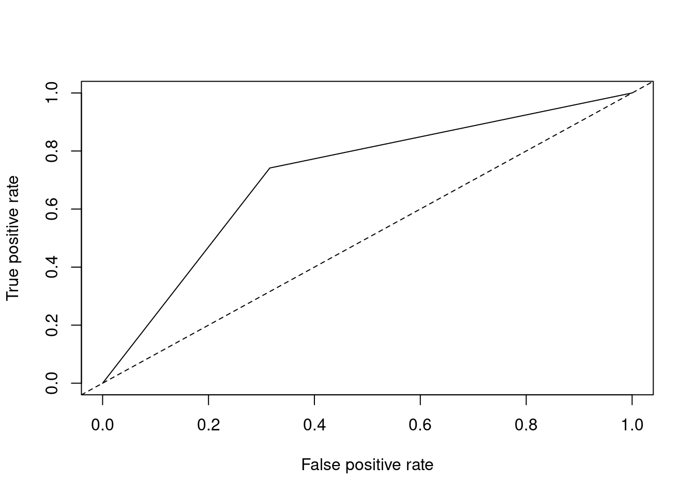
performance(pred.nb.roc, "auc")@y.values## [[1]]
## [1] 0.712837- prediction 함수와 performance 함수로 값을 구하여 plot 함수로 ROC 커브를 그렸으며, AUC값은 @y.values값으로 확인한 결과 0.7128로 나타났다.
4.2.6 K-NN (K-Nearest Neighbor)
- K-NN은 어떤 범주로 나누어져 있는 데이터셋이 있을 때, 새로운 데이터가 추가된다면 이를 어떤 범주로 분류할 것인지를 결정할 때 사용할 수 있는 분류 알고리즘으로 지도학습 (Supervised Learning)의 한 종류이다.
4.2.6.1 K-NN 알고리즘의 원리
- K-NN 알고리즘에서는 새로운 데이터의 클래스를 해당 데이터와 가장 가까운 K개 데이터들의 클래스(범주)로 결정한다.
- K-NN 알고리즘에서는 최근접 이웃 간의 거리를 계산할 때 유클리디안 거리, 맨하탄 거리, 민코우스키 거리 등을 사용할 수 있으며, 대표적으로 유클리디안 거리를 사용한다.
4.2.6.2 K의 선택
- K의 선택은 학습의 난이도와 데이터의 개수에 따라 결정될 수 있으며, 일반적으로는 훈련 데이터 개수의 제곱근으로 설정한다. 그리고 k를 짝수로 했을 때, 인접객체의 범주가 동률일 경우가 나오므로 반드시 홀수의 값으로 k를 선택하는 것이 중요하다.
- K를 너무 크게 설정할 경우 주변에 있는 데이터와 근접성이 떨어져 클러스터링이 잘 이루어지지 않고, 너무 작게 설정할 경우 이상치 혹은 잡음 데이터와 이웃이 될 가능성이 있으므로 적절한 k를 선택하는 것이 중요하다.
4.2.6.3 R을 이용한 K-NN 분석
- knn 분석 이전에 훈련, 데스트 데이터의 종속변수를 제외한 뒤에 분석을 실시한다. 그리고 거리를 이용한 분석이므로 데이터의 형태가 범주형 변수가 아닌 수치형으로 변환되어야 한다.
함수사용법
knn(train, test, cl, k, ...)Q. 앞서 분할한 credit 데이터의 train 데이터로 K-NN 모델을 만들어 보자.
library(class)
train.data<-train[,-1]
head(train.data)## account.balance credit.duration.months previous.credit.payment.status
## 415 3 12 3
## 463 3 15 2
## 179 3 18 2
## 526 3 36 3
## 195 3 12 2
## 938 2 18 3
## credit.purpose credit.amount savings employment.duration installment.rate
## 415 3 522 3 4 4
## 463 1 3812 2 1 1
## 179 4 1950 1 3 4
## 526 3 9566 1 2 2
## 195 3 1262 1 2 3
## 938 4 884 1 4 4
## marital.status guarantor residence.duration current.assets age
## 415 3 1 4 2 42
## 463 1 1 4 3 23
## 179 3 1 1 3 34
## 526 1 1 2 3 31
## 195 3 1 2 3 25
## 938 3 1 4 3 36
## other.credits apartment.type bank.credits occupation dependents telephone
## 415 2 2 2 3 2 2
## 463 2 2 1 3 1 2
## 179 1 2 2 3 1 2
## 526 1 2 2 3 1 1
## 195 2 2 1 3 1 1
## 938 2 2 1 3 2 2
## foreign.worker
## 415 1
## 463 1
## 179 1
## 526 1
## 195 1
## 938 1test.data<-test[,-1]
head(test.data)## account.balance credit.duration.months previous.credit.payment.status
## 1 1 18 3
## 3 2 12 2
## 4 1 12 3
## 7 1 8 3
## 9 3 18 3
## 12 1 30 3
## credit.purpose credit.amount savings employment.duration installment.rate
## 1 2 1049 1 1 4
## 3 4 841 2 3 2
## 4 4 2122 1 2 3
## 7 4 3398 1 3 1
## 9 3 1098 1 1 4
## 12 1 6187 2 3 1
## marital.status guarantor residence.duration current.assets age other.credits
## 1 1 1 4 2 21 2
## 3 1 1 4 1 23 2
## 4 3 1 2 1 39 2
## 7 3 1 4 1 39 2
## 9 1 1 4 3 65 2
## 12 4 1 4 3 24 2
## apartment.type bank.credits occupation dependents telephone foreign.worker
## 1 1 1 3 1 1 1
## 3 1 1 2 1 1 1
## 4 1 2 2 2 1 2
## 7 2 2 2 1 1 2
## 9 2 2 1 1 1 1
## 12 1 2 3 1 1 1class<-train[,1]
head(class)## [1] 1 1 1 1 1 0
## Levels: 0 1knn.3<-knn(train.data, test.data, class, k=3)
knn.7<-knn(train.data, test.data, class, k=7)
knn.10<-knn(train.data, test.data, class, k=10)
# 각각의 k에 대해 분류 table 작성과 분류 정확도 확인
(t.1<-table(knn.3, test$credit.rating))##
## knn.3 0 1
## 0 27 51
## 1 68 154(t.1[1,1]+t.1[2,2])/sum(t.1)## [1] 0.6033333(t.2<-table(knn.7, test$credit.rating))##
## knn.7 0 1
## 0 18 26
## 1 77 179(t.2[1,1]+t.2[2,2])/sum(t.2)## [1] 0.6566667(t.3<-table(knn.10, test$credit.rating))##
## knn.10 0 1
## 0 12 15
## 1 83 190(t.3[1,1]+t.3[2,2])/sum(t.3)## [1] 0.6733333- 분석 이전에 종속변수(credit.rating)을 제외한 데이터를 train.data와 test.data에 저장하고 class에 훈련 데이터의 종속변수를 저장한다 .그리고 k가 3, 7, 10일 때 각각 모델을 knn 함수를 사용하여 만든다.
- 분석 결과를 확인하기 위해서 각각의 k에 대해 분류 table과 정분류율을 계산하여 가장 정분류율이 높은 모델을 찾는다. 위의 결과에서 k를 10으로 했을 때 정분류율이 67%로 가장 높게 나타났다.
result<-numeric()
k=3:22
for (i in k) {
pred<-knn(train.data, test.data, class, k=i-2)
t<-table(pred, test$credit.rating)
result[i-2]<-(t[1,1] + t[2,2])/sum(t)
}
result## [1] 0.5966667 0.6166667 0.6033333 0.5800000 0.6333333 0.6633333 0.6566667
## [8] 0.6666667 0.6766667 0.6633333 0.6700000 0.6666667 0.6800000 0.6766667
## [15] 0.6733333 0.6800000 0.6900000 0.6800000 0.6900000 0.6833333sort(result, decreasing=TRUE)## [1] 0.6900000 0.6900000 0.6833333 0.6800000 0.6800000 0.6800000 0.6766667
## [8] 0.6766667 0.6733333 0.6700000 0.6666667 0.6666667 0.6633333 0.6633333
## [15] 0.6566667 0.6333333 0.6166667 0.6033333 0.5966667 0.5800000which(result==max(result))## [1] 17 19- K-NN에서 최적의 K를 선정하는 것이 중요하다. 그렇기 때문에 최적의 k의 값을 선정해야 하며, 여기에서는 정분류율이 가장 높은 k가 최적의 k값이라고 선정하여 함수를 구현했다.
- 위의 결과에서 k가 17, 19일 때 분류 정확도가 가장 좋다고 나타나며, 정분류율은 69%이다.
4.2.7 인공신경망 모형 (Artificial Neural Network)
- 인공신경망 모형은 동물의 뇌신경계를 모방하여 분류 또는 예측하기 위해 만들어진 모형이다. 신경망에서는 입력은 인간의 뇌의 시냅스에 해당하며 개별 신호의 강도에 따라 가중되며, 활성 함수는 인공신경망의 출력을 계산한다.
- 인공신경망은 가중치를 반복적으로 조정하여 학습하며 뉴런들은 링크로 연결되어 있고, 각 링크에는 수치적인 가중치가 있다. 인공신경망은 신경망의 가중치를 초기화하고 훈련 데이터를 통해 가중치를 갱신하여 신경망의 구조를 선택하고, 활용할 학습 알고리즘을 결정한 후 신경망을 훈련 시킨다.
4.2.7.1 특징
4.2.7.1.1 구조
- 입력 링크에서 여러 신호를 받아서 새로운 활성화 수준을 계산하고, 출력 링크로 출력 신호를 보낸다.
- 입력신호는 미가공 데이터 또는 다른 뉴런으로부터의 출력이며, 출력신호는 문제의 최종해 (Solution)이 되거나 다른 뉴런의 입력이 될 수 있다.
4.2.7.1.2 뉴런의 계산
- 뉴런은 전이함수, 즉 활성화 함수 (activation function)를 사용하며, 활성화 함수를 이용해 출력을 결정하며 입력신호의 가중치 합을 계산하여 임계값과 비교한다.
- 가중치 합이 임계값보다 작으면 뉴런의 출력은 -1 혹은 0, 같거나 크면 +1 혹은 x의 값을 출력한다.
4.2.7.1.3 뉴런의 활성화 함수
- 시그모이드 함수
- softmax 함수
- Relu 함수
4.2.7.1.4 단일 뉴런의 학습 (단층 퍼셉트론)
- 퍼셉트론은 선형 결합기와 하드 리미터로 구성되며, 초평면은 n차원 공간을 두 개의 영역으로 나눈다.
- 초평면을 선형 분리함수로 정의한다. \[\sum_{i=1}^n x_iw_i-\theta=0\]
4.2.7.2 R을 이용한 인공신경망 분석
- R에서 인공신경망 분석을 수행할 수 있는 패키지는 nnet와 neuralnet이 있으며 각각 nnet 함수와 neuralnet 함수를 제공한다.
4.2.7.2.1 nnet
- nnet 패키지는 전통적인 역전파를 가지고 feed-forward 신경망을 훈련하는 알고리즘을 제공한다. 그리고 신경망의 매개변수는 엔트로피와 SSE로 최적화되며, 출력결과를 softmax 함수를 사용해 확률 형태로 변환이 가능하고 과적합을 막기 위해 가중치 감소를 제공한다.
- nnet 함수는 size, maxit, decay 인자 외에도 가중치를 설정하는 weights, 초기 가중치 값을 설정하는 wts 등의 인자가 있다.
- nnet 함수로 생성된 모델의 변수 중요도를 파악하기 위해서는 NeuralNetTools 패키지의 garson 함수를 사용하여 확인한다.
함수사용법
nnet(formula, data, size, maxit, decay=5e-04 ...)| 인자 | 설명 |
|---|---|
| formula | 수식(종속변수 ~ 독립변수) |
| data | 분석하고자 하는 데이터 |
| size | hidden node의 개수 |
| maxit | 학습 반복횟수, 반복 중 가장 좋은 모델을 선정함. |
| decay | 가중치 감소의 모수, 보통 5e-04 채택 |
함수사용법
garson(mod_in)| 인자 | 설명 |
|---|---|
| mod_in | 생성된 인공신경망 모델 |
Q. 앞서 분할한 credit 데이터의 train 데이터로 nnet 함수를 활용한 인공신경망 모델을 만들어 보자.
library(nnet)
set.seed(1231)
nn.model<-nnet(credit.rating ~ ., data=train, size=2, maxit=200, decay=5e-04)## # weights: 45
## initial value 431.435559
## iter 10 value 423.284097
## iter 20 value 423.069450
## iter 30 value 412.275788
## iter 40 value 379.171871
## iter 50 value 343.935787
## iter 60 value 338.439394
## iter 70 value 334.864491
## iter 80 value 331.713287
## iter 90 value 331.330445
## iter 100 value 330.202215
## iter 110 value 328.168809
## iter 120 value 320.901862
## iter 130 value 316.684662
## iter 140 value 313.512983
## iter 150 value 312.780486
## iter 160 value 312.686319
## iter 170 value 312.614992
## iter 180 value 312.507704
## iter 190 value 312.286285
## iter 200 value 312.204529
## final value 312.204529
## stopped after 200 iterationssummary(nn.model)## a 20-2-1 network with 45 weights
## options were - entropy fitting decay=5e-04
## b->h1 i1->h1 i2->h1 i3->h1 i4->h1 i5->h1 i6->h1 i7->h1 i8->h1 i9->h1
## -11.03 35.33 -1.77 14.85 -6.62 0.00 26.54 -2.95 -1.53 4.76
## i10->h1 i11->h1 i12->h1 i13->h1 i14->h1 i15->h1 i16->h1 i17->h1 i18->h1 i19->h1
## -6.35 0.83 -23.34 1.32 3.49 8.71 -3.97 -24.77 -9.60 6.63
## i20->h1
## -5.47
## b->h2 i1->h2 i2->h2 i3->h2 i4->h2 i5->h2 i6->h2 i7->h2 i8->h2 i9->h2
## -3.17 10.72 -10.34 7.07 0.76 -0.02 1.81 7.05 -2.46 13.33
## i10->h2 i11->h2 i12->h2 i13->h2 i14->h2 i15->h2 i16->h2 i17->h2 i18->h2 i19->h2
## 1.54 -0.92 -7.43 1.62 1.62 1.12 -6.78 1.57 -11.20 11.62
## i20->h2
## -1.12
## b->o h1->o h2->o
## -0.71 2.34 3.51- 분석 결과를 확인하면 총 45개의 가중치가 주어졌음을 #weights: 45에서 확인할 수 있으며, iteration이 반복될수록 error이 줄어들고 있음을 확인할 수 있다. 그리고 200번째 반복 후에 학습을 멈췄으며, 최종 error값이 312.204529임을 final value를 보고 확인할 수 있다.
- summary 함수로 분석결과를 확인하면 “a 20-2-1 network with 45 weights”는 입력노드 20개, 은닉노드 2개, 출력노드 1개를 의미하고 가중치는 총 45개임을 알 수 있다.
install.packages(setdiff("devtools", rownames(installed.packages())))
library(devtools)
source_url('https://gist.githubusercontent.com/Peque/41a9e20d6687f2f3108d/raw/85e14f3a292e126f1454864427e3a189c2fe33f3/nnet_plot_update.r')
X11()
plot.nnet(nn.model)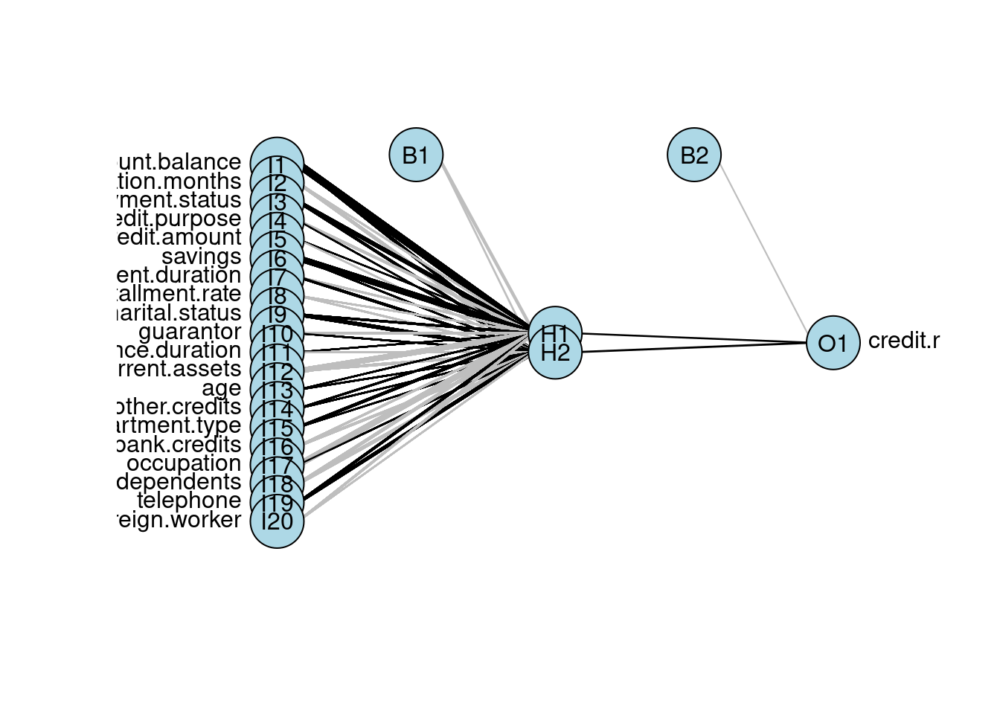 - summary의 결과에서 나타난 것처럼 20개의 입력노드, 2개의 은닉노드, 1개의 출력노드, 2개의 상수항을 확인할 수 있다. 그림에서 선의 굵기는 연결선의 가중치에 비례한다.
install.packages(setdiff("NeuralNetTools", rownames(installed.packages())))
library(NeuralNetTools)
X11()
garson(nn.model)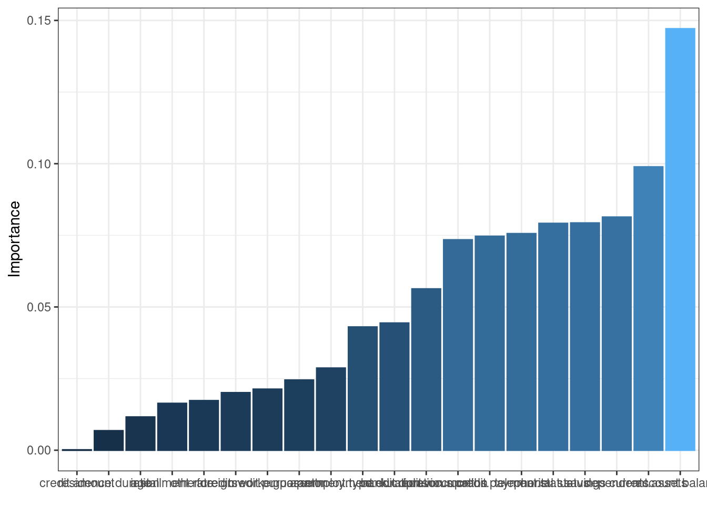
- 변수 중요도 그래프를 통해 모델의 분류에서 중요한 변수를 확인할 수 있다. 변수 중요도를 파악한 결과 account.balance, current.assets, dependents 순으로 변수 중요도가 크다는 것을 파악할 수 있다.
install.packages(setdiff("caret", rownames(installed.packages())))
library(caret)
pred.nn<-predict(nn.model, test[,-1], type="class")
confusionMatrix(data=as.factor(pred.nn), reference=test[,1], positive='1')## Confusion Matrix and Statistics
##
## Reference
## Prediction 0 1
## 0 51 41
## 1 44 164
##
## Accuracy : 0.7167
## 95% CI : (0.662, 0.767)
## No Information Rate : 0.6833
## P-Value [Acc > NIR] : 0.1185
##
## Kappa : 0.3397
##
## Mcnemar's Test P-Value : 0.8283
##
## Sensitivity : 0.8000
## Specificity : 0.5368
## Pos Pred Value : 0.7885
## Neg Pred Value : 0.5543
## Prevalence : 0.6833
## Detection Rate : 0.5467
## Detection Prevalence : 0.6933
## Balanced Accuracy : 0.6684
##
## 'Positive' Class : 1
## - 정분류율을 0.7167이며, 민감도는 0.8000으로 높게 나타났다. 또, 특이도는 0.5368이다. 정확도가 높다고 해서 무조건 좋은 모형은 아니며, 분석 분야에 따라 다양한 지표들을 활용하여 분석 모형을 선택할 수 있다.
install.packages(setdiff("ROCR", rownames(installed.packages())))
library(ROCR)
pred.nn.roc<-prediction(as.numeric(pred.nn), as.numeric(test[,1]))
plot(performance(pred.nn.roc, "tpr", "fpr"))
abline(a=0, b=1, lty=2, col="black")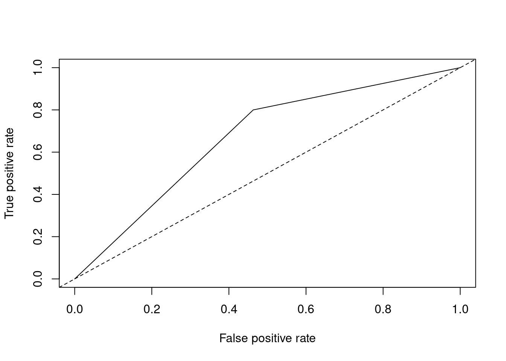
performance(pred.nn.roc, "auc")@y.values## [[1]]
## [1] 0.6684211- prediction 함수와 performance 함수로 값을 구하여 plot 함수로 ROC 커브를 그렸으며, AUC값은 @y.values값으로 확인한 결과 0.6684로 나타났다.
4.2.7.2.2 neuralnet
- neuralnet 패키지는 회귀분석의 맥락에서 신경망을 훈련하기 위해 만들어져서 탄력적 역전파가 사용되었고 인공싱경망 중 빠른 알고리즘의 하나이다.
- neuralnet함수는 다양한 역전파 알고리즘을 통해 모형을 적합하며, 수행결과는 plot 함수로 편리하게 시각화가 가능하다. 아래의 설명인자 이외에도 err.fct(오차 총합 지정, sse와 ce), act.fct(활서오하 함수 지정, logistic과 tanh) 등으로 추가 모형의 조정이 가능하다.
함수사용법
neuralnet(formula, data, algorithm, threshold, hidden, stepmax ...)| 인자 | 설명 |
|---|---|
| formula | 수식(종속변수 ~ 독립변수) |
| data | 분석하고자 하는 데이터 |
| algorithm | 사용할 알고리즘을 지정, “backprop”(역전파), “rprop+”(Default), “rprop-” 등이 있음 |
| threshold | 훈련중단 기준으로 default는 0.01 |
| hidden | 은닉 노드의 개수, c(n,m)으로 입력하면 첫번째 hidden layer에 n개의 hidden node를 가지고 두번째 hidden layer에 m개의 hidden node를 가짐 |
| stepmax | 인공 신경망 훈련 수행 최대횟수 |
Q. infert 데이터는 자연유산과 인공유산 후의 불임에 대한 사례-대조 연구자료로 8개의 변수와 248개의 관측치를 가지고 있다. 반응변수 case 변수는 (1:사례, 0:대조)로 나타낸다. infert 데이터를 train, test로 분할하고 neuralnet 함수를 활용하여 인공신경망 모델을 만들어 보자.
install.packages(setdiff("neuralnet", rownames(installed.packages())))
library(neuralnet)
data(infert)
in.part<-createDataPartition(infert$case, times=1, p=0.7)
table(infert[in.part$Resample1, "case"])##
## 0 1
## 118 56parts<-as.vector(in.part$Resample1)
train.infert<-infert[parts,]
test.infert<-infert[-parts,]
nn.model2<-neuralnet(case~age+parity+induced+spontaneous, data=train.infert,
hidden=c(2,2), algorithm="rprop+", threshold=0.01, stepmax=1e+5)
X11()
plot(nn.model2)- plot으로 나타냈을 때, hidden layer 2개에 hidden node도 2개가 나타남을 확인할 수 있으며, nnet의 그래프와 다르게 가중치가 선의 굵기로 나타나지 않고 수치로 나타남을 확인할 수 있다.
names(nn.model2)## [1] "call" "response" "covariate"
## [4] "model.list" "err.fct" "act.fct"
## [7] "linear.output" "data" "exclude"
## [10] "net.result" "weights" "generalized.weights"
## [13] "startweights" "result.matrix"- neuralnet() 함수의 수행 결과의 추가적인 정보는 names 함수를 통해 확인할 수 있다. 분석에 사용한 전체 자료는 $data에 저장되어 있으며, 모형 적합에 사용된 자료는 $covariate와 $response를 통해 확인이 가능하다. 그리고 적합값은 $net.result에 제공되고 가중치의 초기값과 적합값은 $startweights와 $weights에서 제공한다.
library(neuralnet)
set.seed(1231)
test.infert$nn.model2_pred.prob <- compute(nn.model2, covariate=test.infert[,c(2:4,6)])$net.result- compute 함수는 각 뉴런의 출력값을 계산해주며, 기존의 분류모형에서 사용된 predict 함수의 역할을 하여 예측값을 구해준다. 분석에 사용한 예측변수를 covariate 인자에 추가하여 예측값을 $net.result를 통해 확인할 수 있다.
test.infert$nn.model2_pred <- ifelse(test.infert$nn.model2_pred.prob > 0.5, 1, 0)- 로지스틱 회귀분석과 동일하게 neuralnet의 예측값은 범주로 나타나는 것이 아닌 확률값으로 나타나기 때문에 기준이 되는 확률보다 크면 1, 작으면 0으로 범주를 추가한다.
confusionMatrix(as.factor(test.infert$nn.model2_pred), as.factor(test.infert[,5]))## Confusion Matrix and Statistics
##
## Reference
## Prediction 0 1
## 0 41 16
## 1 6 11
##
## Accuracy : 0.7027
## 95% CI : (0.5852, 0.8034)
## No Information Rate : 0.6351
## P-Value [Acc > NIR] : 0.13806
##
## Kappa : 0.3037
##
## Mcnemar's Test P-Value : 0.05501
##
## Sensitivity : 0.8723
## Specificity : 0.4074
## Pos Pred Value : 0.7193
## Neg Pred Value : 0.6471
## Prevalence : 0.6351
## Detection Rate : 0.5541
## Detection Prevalence : 0.7703
## Balanced Accuracy : 0.6399
##
## 'Positive' Class : 0
## - 정분류율은 0.7이며, 민감도는 0.8163으로 높게 나타났다. 또 특이도는 0.4800이다. 정확도가 높다고 해서 무조건 좋은 모형은 아니며, 분석분야에 따라 다양한 지표들을 활용하여 분석 모형을 선택할 수 있다.
4.3 군집분석
군집분석은 각 개체의 유사성을 측정하여 유사성이 높은 대상 집단을 분류하고, 군집에 속한 객체들의 유사성과 서로 다른 군집에 속한 개체간의 상이성을 규명하는 다변량 분석기법이다. 군집 분석에서 이용되는 다변량 자료는 별도의 반응변수가 요구되지 않으며, 오로지 개체들간의 유사성에만 기초하여 군집을 형성한다. 군집 분석은 이상값 탐지에도 사용되며, 심리학, 사회학, 경영학, 생물학 등 다양한 분야에 이용되고 있다.
4.3.1 군집분석
4.3.1.1 개요
- 각 객체의 유사성을 측정하여 유사성이 높은 대상 집단을 분류하고, 군집에 속한 객체들의 유사성과 서로 다른 군집에 속한 객체 간의 상이성을 규명하는 분석 방법이다.
- 군집 분석은 특성에 따라 고객을 여러개의 배타적인 집단으로 나누는 것이며, 결과는 구체적인 군집 분석 방법에 따라 차이가 나타날 수 있다.
- 군집의 개수나 구조에 대한 가정 없이 데이터들 사이의 거리를 기준으로 군집화를 유도하며, 마케팅 조사에서 소비자들의 상품구매행동이나 life style에 따른 소비자 군을 분류하여 시장 전략 수립 등에 활용한다.
4.3.1.2 특징
4.3.1.2.1 요인분석과의 차이점
- 요인분석은 유사한 변수를 함께 묶어주는 것이 목적이다.
4.3.1.2.2 판별분석과의 차이점
- 판별분석은 사저넹 집단이 나누어져 있는 자료를 통해 새로운 데이터를 기존의 집단에 할당하는 것이 목적이다.
4.3.1.3 거리
4.3.1.3.1 연속형 변수의 경우
- 유클리디안 거리
- 표준화 거리
- 마할라노비스 거리
- 체비셰프 거리
- 맨하탄 거리
- 캔버라 거리
- 민코우스키 거리
4.3.1.3.2 범주형 변수의 경우
- 자카드 거리
- 자카드 계수
- 코사인 유사도
4.3.2 계층적 군집분석
- 계층적 군집분석은 n개의 군집으로 시작해 점차 군집의 개수를 줄여 나가는 방법이다.
- 계층적 군집을 형성하는 방법에는 합병형 방법과 분리형 방법이 있다.
4.3.2.1 계층적 군집분석 종류
4.3.2.1.1 최단연결법
4.3.2.1.2 최장연결법
4.3.2.1.3 평균연결법
4.3.2.1.4 와드연결법
4.3.2.1.5 군집화
4.3.2.1.6 R을 활용한 계층적 군집분석
함수사용법
dist(data, method)| 인자 | 설명 |
|---|---|
| data | 분석하고자 하는 데이터 |
| method | 거리측정 방법, “euclidean”,“maximum”,“manhattan”,“canberra”,“binary”,“minkowski”가 있음 |
함수사용법
hclust(data, method)| 인자 | 설명 |
|---|---|
| data | dist 함수로 거리가 측정된 데이터 |
| method | 거리측정 방법, “single”, “complete”, “average”, “median”, “ward.D”가 있음 |
Q. USArrests 데이터는 미국 주(State)별 강력 범죄율 정보를 담고 있다. USArrests 데이터의 정보로 거리를 구하고 최단, 최장, 평균연결법을 실시해보자.
US<-USArrests
US.dist<-dist(US, "euclidean")
US.dist## Alabama Alaska Arizona Arkansas California
## Alaska 37.177009
## Arizona 63.008333 46.592489
## Arkansas 46.928137 77.197409 108.851918
## California 55.524769 45.102217 23.194180 97.582017
## Colorado 41.932565 66.475935 90.351148 36.734861 73.197131
## Connecticut 128.206942 159.406556 185.159526 85.028289 169.277110
## Delaware 16.806249 45.182961 58.616380 53.010376 49.291480
## Florida 102.001618 79.974496 41.654532 148.735739 60.980735
## Georgia 25.841827 57.030255 86.037957 25.586129 73.997297
## Hawaii 191.803050 221.193535 248.268967 147.775979 231.071093
## Idaho 116.761980 146.484982 176.817674 70.587038 162.612792
## Illinois 28.454877 42.911653 45.697812 67.770274 32.718802
## Indiana 123.345207 152.804090 181.897801 78.478086 166.229961
## Iowa 180.610105 209.983523 239.991458 134.594948 224.634659
## Kansas 121.519875 151.480197 180.028914 76.753436 164.516747
## Kentucky 127.284170 156.612037 187.690303 81.092848 173.207910
## Louisiana 15.454449 32.348879 48.494639 61.545512 41.635562
## Maine 154.145289 183.897526 214.327413 107.850730 199.931113
## Maryland 64.993615 44.839492 15.015991 111.642913 36.347352
## Massachusetts 91.648513 123.254209 145.875906 54.181178 129.524708
## Michigan 28.485435 28.857755 39.872422 71.100281 27.746351
## Minnesota 164.650964 194.253571 223.088256 119.324641 207.222537
## Mississippi 27.390144 28.635118 52.708728 69.685364 55.683570
## Missouri 59.788293 89.306719 116.467377 24.894377 100.988910
## Montana 127.392621 156.673578 187.540849 81.163107 172.996069
## Nebraska 134.436974 164.114259 193.423602 88.978930 178.100814
## Nevada 37.430469 34.886817 44.797433 74.288694 26.746962
## New Hampshire 179.736196 209.254415 239.255616 133.678308 224.055395
## New Jersey 83.243018 114.735566 135.850396 49.844257 119.041169
## New Mexico 51.643489 33.521933 13.896043 97.931200 24.495102
## New York 33.710829 43.182983 40.853519 73.762118 26.900929
## North Carolina 101.961022 79.376067 57.619615 147.184238 80.332123
## North Dakota 192.416138 221.378590 252.808188 145.855545 238.214462
## Ohio 117.387606 147.373335 174.338177 74.369752 157.998513
## Oklahoma 85.848704 116.429421 143.931407 43.012673 128.779346
## Oregon 78.386861 106.930117 135.672879 36.895122 120.039577
## Pennsylvania 131.085087 161.600897 188.866222 86.990862 172.999364
## Rhode Island 70.338112 103.903802 122.418871 42.185305 107.213106
## South Carolina 44.182915 27.556487 36.890920 89.248866 47.061343
## South Dakota 151.089113 179.948131 211.751576 104.455206 197.524378
## Tennessee 48.347596 77.884530 108.258117 12.614278 94.727662
## Texas 41.566092 72.362214 93.275988 32.744618 77.380230
## Utah 118.502700 148.276094 174.257338 76.438995 157.492635
## Vermont 190.370691 218.290472 251.489264 143.528569 237.435465
## Virginia 80.295330 110.646690 139.424711 36.421560 124.820912
## Washington 92.820472 122.147002 149.297857 51.204785 133.106574
## West Virginia 156.792411 185.640863 218.006078 110.071113 204.253715
## Wisconsin 183.775733 213.575397 242.312381 138.344245 226.457502
## Wyoming 75.507086 106.740105 135.380390 30.987255 121.720335
## Colorado Connecticut Delaware Florida Georgia
## Alaska
## Arizona
## Arkansas
## California
## Colorado
## Connecticut 98.081191
## Delaware 41.477825 128.210179
## Florida 131.405822 226.303005 99.108325
## Georgia 25.093027 104.426529 33.245300 125.766490
## Hawaii 159.179176 64.952367 192.366109 289.428575 167.128005
## Idaho 90.886413 25.280427 119.421313 217.665179 93.116057
## Illinois 47.669068 139.906469 18.151859 86.558708 45.002667
## Indiana 93.615063 16.316250 125.310534 222.923866 98.772871
## Iowa 152.079749 57.595573 182.709989 281.013523 156.445805
## Kansas 92.179716 14.173920 123.165945 221.082722 97.174071
## Kentucky 101.024749 26.343880 130.597435 228.332762 103.041448
## Louisiana 49.974994 140.398077 16.976749 87.670348 38.690567
## Maine 127.900156 37.647443 156.666652 255.152307 130.472564
## Maryland 97.300411 191.161947 63.577984 37.783859 89.505363
## Massachusetts 59.900000 40.165284 89.958324 187.043738 68.762272
## Michigan 51.454835 147.266561 26.531679 80.356269 47.398101
## Minnesota 134.764535 39.746698 166.141656 264.225831 140.327830
## Mississippi 68.664401 153.263955 36.479172 85.390456 51.355428
## Missouri 29.179788 70.695827 61.378905 157.491746 35.571337
## Montana 100.751675 24.746313 130.393136 228.327856 103.302081
## Nebraska 105.668349 17.865050 136.378334 234.464006 110.195735
## Nevada 48.834209 146.551083 35.053245 84.255860 50.567579
## New Hampshire 151.589182 57.043843 181.854695 280.247480 155.665603
## New Jersey 50.420829 51.196680 80.877995 176.897174 60.778286
## New Mexico 81.736222 176.580322 50.089320 51.147238 75.177723
## New York 52.278102 145.268166 24.189461 81.542198 50.643657
## North Carolina 138.977588 229.504009 102.861557 38.527912 127.335973
## North Dakota 165.750928 73.038962 195.272271 293.622751 168.611417
## Ohio 85.817539 15.036289 118.179186 215.466610 92.883637
## Oklahoma 57.099737 43.036031 87.195929 184.983918 61.759858
## Oregon 47.364121 53.242840 80.307223 176.810661 54.050902
## Pennsylvania 101.039596 8.027453 132.003674 229.949581 106.822376
## Rhode Island 43.879494 64.837104 66.208006 163.312461 50.992647
## South Carolina 82.641939 172.206765 48.725148 65.187115 69.194581
## South Dakota 125.302115 40.039231 154.422829 252.438844 127.294776
## Tennessee 28.005892 82.192761 53.343228 148.592867 23.427548
## Texas 14.501034 92.659160 39.665224 134.179917 22.851258
## Utah 85.625522 15.755951 118.514556 215.533849 94.292364
## Vermont 165.047690 76.617361 194.254601 292.020085 166.724923
## Virginia 53.416851 49.307200 82.678716 180.286023 56.028743
## Washington 60.642065 38.334058 93.604327 190.555635 68.590962
## West Virginia 132.360115 47.895720 160.562418 258.460539 133.229651
## Wisconsin 154.115217 58.056696 185.194195 283.423799 159.511880
## Wyoming 52.036718 54.060152 77.934909 176.112606 52.119094
## Hawaii Idaho Illinois Indiana Iowa
## Alaska
## Arizona
## Arkansas
## California
## Colorado
## Connecticut
## Delaware
## Florida
## Georgia
## Hawaii
## Idaho 79.751426
## Illinois 203.099606 132.811445
## Indiana 69.406412 15.407790 137.256111
## Iowa 29.407822 64.137119 195.329286 58.584042
## Kansas 71.100844 13.964240 135.278823 3.929377 60.177487
## Kentucky 70.459705 13.409698 143.599373 14.606163 53.993055
## Louisiana 203.970611 130.433278 17.811232 136.255936 193.966621
## Maine 50.566788 37.672404 170.033320 36.003472 27.879383
## Maryland 254.687573 181.189542 53.593376 187.179192 244.930725
## Massachusetts 103.097139 42.539981 100.495224 41.544314 97.277130
## Michigan 209.833863 138.390968 15.591664 143.065789 201.381355
## Minnesota 31.620405 49.482320 178.213636 41.706834 18.713899
## Mississippi 216.832308 140.041637 41.244394 147.822258 203.972670
## Missouri 132.931148 62.104428 72.315973 65.613108 124.035680
## Montana 69.885120 11.764353 143.447273 13.512957 53.529898
## Nebraska 59.930710 19.904271 148.806787 12.596031 46.609548
## Nevada 207.733603 138.767431 22.366046 142.221658 200.738860
## New Hampshire 31.220666 63.208702 194.607657 58.096988 2.291288
## New Jersey 113.187323 52.822344 90.399336 51.931493 108.241813
## New Mexico 239.726553 166.969608 39.135789 172.481448 230.493557
## New York 208.186095 138.541907 6.236986 142.699755 200.856292
## North Carolina 293.600238 217.443717 96.214188 225.019221 281.504316
## North Dakota 41.335941 75.999013 208.585834 72.757474 17.548789
## Ohio 74.467711 22.692069 129.311136 12.213517 67.439009
## Oklahoma 106.074172 34.736724 99.294713 38.136072 96.130380
## Oregon 114.490043 43.855444 91.729712 46.842075 105.072784
## Pennsylvania 61.237978 23.112334 143.769329 11.662761 52.485903
## Rhode Island 128.628224 63.564534 77.048621 66.187083 121.796716
## South Carolina 235.800975 159.765860 46.295248 167.030207 223.795174
## South Dakota 55.686713 35.219313 167.874953 34.753417 32.385336
## Tennessee 144.385941 70.161599 65.675338 75.708718 133.388005
## Texas 155.296008 86.410069 48.171984 89.551661 147.871194
## Utah 74.139733 27.423530 129.240280 17.135052 68.996812
## Vermont 51.919264 75.346931 207.925660 73.722724 26.249000
## Virginia 111.850302 38.132139 95.202416 43.067157 100.816913
## Washington 99.692979 33.644613 104.698615 33.545193 91.663788
## West Virginia 57.271022 42.185543 174.350738 42.885196 31.068473
## Wisconsin 20.824265 68.151009 197.332410 61.042608 9.508417
## Wyoming 117.377212 41.672533 91.414003 48.562537 105.231412
## Kansas Kentucky Louisiana Maine Maryland
## Alaska
## Arizona
## Arkansas
## California
## Colorado
## Connecticut
## Delaware
## Florida
## Georgia
## Hawaii
## Idaho
## Illinois
## Indiana
## Iowa
## Kansas
## Kentucky 15.766420
## Louisiana 134.394940 140.937220
## Maine 36.989863 28.407921 167.825058
## Maryland 185.337881 191.939600 51.479802 218.699886
## Massachusetts 39.018585 52.125713 102.551499 74.763226 152.659294
## Michigan 141.398798 148.859665 16.652327 175.949680 46.129492
## Minnesota 43.237715 40.199005 177.605124 19.919086 228.528707
## Mississippi 146.023354 150.351588 24.708298 176.939227 48.451316
## Missouri 64.015936 72.298686 71.651657 99.246007 122.059207
## Montana 14.406943 3.834058 141.035457 27.733914 191.924595
## Nebraska 13.789126 13.349157 147.582858 23.717715 198.508665
## Nevada 140.770878 148.923940 28.472443 176.131343 53.217009
## New Hampshire 59.594127 53.141321 193.137723 26.530925 244.109668
## New Jersey 49.674943 62.293980 93.298231 85.843404 143.042686
## New Mexico 170.716051 177.630318 37.762548 204.553123 15.890249
## New York 140.757309 149.261515 21.417283 175.732439 49.798896
## North Carolina 223.108964 228.131388 90.708158 254.439973 44.640565
## North Dakota 74.333909 65.728304 206.240563 38.664454 257.069057
## Ohio 10.920165 26.110726 129.569479 46.443514 180.335687
## Oklahoma 36.115924 45.202876 98.439220 71.288779 149.281379
## Oregon 45.452173 54.009629 90.893674 80.635538 141.153144
## Pennsylvania 11.256109 20.555291 143.600487 32.218783 194.556958
## Rhode Island 63.425941 74.523084 80.020060 97.872059 129.300657
## South Carolina 165.259826 170.224939 35.001286 196.957813 28.977578
## South Dakota 36.247483 25.001200 165.023998 8.537564 215.780560
## Tennessee 74.222975 80.091260 61.619234 107.596561 112.305031
## Texas 87.710547 96.652160 50.181471 123.250355 99.886185
## Utah 15.901258 31.477135 130.331616 49.388460 180.716961
## Vermont 75.535952 64.832554 204.578200 39.969613 255.122265
## Virginia 41.273963 48.485049 93.315915 75.368229 144.257582
## Washington 31.941196 43.214581 104.933122 68.338642 155.296008
## West Virginia 44.280696 31.906112 170.919572 12.775367 221.627187
## Wisconsin 62.509199 58.417977 196.748062 33.678628 247.739157
## Wyoming 46.458584 52.696300 88.867992 79.043849 139.782295
## Massachusetts Michigan Minnesota Mississippi Missouri
## Alaska
## Arizona
## Arkansas
## California
## Colorado
## Connecticut
## Delaware
## Florida
## Georgia
## Hawaii
## Idaho
## Illinois
## Indiana
## Iowa
## Kansas
## Kentucky
## Louisiana
## Maine
## Maryland
## Massachusetts
## Michigan 108.488386
## Minnesota 79.340091 184.524795
## Mississippi 117.976820 35.440090 188.778706
## Missouri 35.053816 77.473996 107.091456 86.084958
## Montana 51.250073 148.808266 39.384515 150.610425 72.098821
## Nebraska 52.326380 154.789535 30.349959 158.469555 77.453083
## Nevada 107.554312 13.297368 183.527818 47.627933 76.968045
## New Hampshire 96.729158 200.707150 18.828701 202.982167 123.427307
## New Jersey 11.456439 98.634578 90.195898 110.016272 28.511752
## New Mexico 137.911711 30.421867 213.907760 39.988623 107.097946
## New York 105.673696 15.066519 183.630063 43.531598 77.722712
## North Carolina 192.400624 89.032634 266.032949 78.074388 161.457146
## North Dakota 112.209447 214.244090 35.698319 214.769947 137.364661
## Ohio 31.231715 135.781921 49.481411 142.751287 58.635569
## Oklahoma 17.650212 105.405218 79.285686 111.079521 28.390139
## Oregon 24.356724 96.697880 88.216778 103.938828 19.698223
## Pennsylvania 44.984108 150.488139 34.712534 155.864942 73.295157
## Rhode Island 26.343880 86.740590 104.350611 96.502487 27.062335
## South Carolina 135.674021 37.630440 208.249010 21.167192 103.666050
## South Dakota 74.710173 173.113200 25.349951 173.492882 96.711943
## Tennessee 48.854887 69.155260 117.299829 73.283354 15.502580
## Texas 53.689198 55.177169 130.573198 68.863053 25.494705
## Utah 30.182777 135.974446 50.638424 144.281149 59.377858
## Vermont 114.196541 212.796194 41.784447 211.879730 136.672016
## Virginia 23.857284 100.709086 84.452827 105.074830 24.279621
## Washington 16.067669 110.660833 74.211724 118.601096 33.570821
## West Virginia 82.405643 179.464760 29.160933 178.544112 103.624804
## Wisconsin 98.033107 203.835080 19.437592 207.706379 126.430692
## Wyoming 27.843312 97.161412 89.298936 99.743371 23.507446
## Montana Nebraska Nevada New Hampshire New Jersey
## Alaska
## Arizona
## Arkansas
## California
## Colorado
## Connecticut
## Delaware
## Florida
## Georgia
## Hawaii
## Idaho
## Illinois
## Indiana
## Iowa
## Kansas
## Kentucky
## Louisiana
## Maine
## Maryland
## Massachusetts
## Michigan
## Minnesota
## Mississippi
## Missouri
## Montana
## Nebraska 11.528226
## Nevada 148.820697 154.251937
## New Hampshire 52.686051 45.987390 200.210539
## New Jersey 61.674306 63.189398 97.344132 107.738480
## New Mexico 177.596875 183.974917 37.467986 229.732997 128.179132
## New York 149.111032 154.332109 20.645096 200.163833 95.399057
## North Carolina 228.247870 235.774999 97.034272 280.505561 183.462939
## North Dakota 65.474041 60.579617 214.115973 17.161876 123.275342
## Ohio 25.133444 22.934908 134.495985 67.071976 41.518309
## Oklahoma 44.747290 49.543314 105.249038 95.448939 22.518437
## Oregon 53.512802 58.636166 95.797599 104.522151 24.505102
## Pennsylvania 19.296114 11.070682 149.663021 51.998077 55.806989
## Rhode Island 73.846936 76.661920 87.285337 121.050114 18.848077
## South Carolina 170.390053 177.941030 48.734895 222.863837 127.057821
## South Dakota 24.714368 23.641912 173.276657 31.237477 85.521693
## Tennessee 80.243941 87.134207 70.326453 132.649802 42.898135
## Texas 96.543772 101.373369 54.977268 147.242521 43.794749
## Utah 30.001500 26.271087 134.311615 68.744236 40.453059
## Vermont 64.834250 62.036280 212.903828 25.688519 125.119143
## Virginia 48.308798 54.334888 100.964251 100.081966 26.264425
## Washington 42.379712 45.433248 109.417914 91.189363 22.766642
## West Virginia 32.101402 31.996875 179.983721 29.631065 93.151167
## Wisconsin 57.861213 49.521510 202.872374 10.860018 108.867075
## Wyoming 52.481235 59.093654 98.363205 104.361391 29.250641
## New Mexico New York North Carolina North Dakota Ohio
## Alaska
## Arizona
## Arkansas
## California
## Colorado
## Connecticut
## Delaware
## Florida
## Georgia
## Hawaii
## Idaho
## Illinois
## Indiana
## Iowa
## Kansas
## Kentucky
## Louisiana
## Maine
## Maryland
## Massachusetts
## Michigan
## Minnesota
## Mississippi
## Missouri
## Montana
## Nebraska
## Nevada
## New Hampshire
## New Jersey
## New Mexico
## New York 35.399011
## North Carolina 59.896244 93.132218
## North Dakota 242.906155 214.253425 292.388919
## Ohio 165.472959 134.586515 219.202144 82.626025
## Oklahoma 134.645646 104.835395 187.566442 109.576138 31.819019
## Oregon 126.234266 97.132281 180.021804 118.430613 40.659193
## Pennsylvania 179.907893 149.159244 232.672151 67.771749 15.755951
## Rhode Island 115.067111 82.323326 168.777961 136.006470 56.980874
## South Carolina 24.923082 45.747678 58.445872 234.921263 161.436117
## South Dakota 201.633951 173.594873 251.190227 41.487950 46.284015
## Tennessee 97.776684 71.344586 150.045593 145.643125 70.321121
## Texas 84.860179 53.365907 140.746048 161.569954 81.436908
## Utah 165.761515 134.404799 220.127872 84.676561 6.637771
## Vermont 241.110867 213.666141 289.535231 13.044922 84.634804
## Virginia 129.724207 100.841063 182.006621 113.669917 37.972753
## Washington 140.351594 110.001909 194.501954 105.869967 25.747427
## West Virginia 207.676022 180.137170 256.264570 36.728871 54.460720
## Wisconsin 233.176178 202.749451 285.014473 23.737944 68.588993
## Wyoming 125.576311 97.230345 176.747532 117.545268 44.044182
## Oklahoma Oregon Pennsylvania Rhode Island South Carolina
## Alaska
## Arizona
## Arkansas
## California
## Colorado
## Connecticut
## Delaware
## Florida
## Georgia
## Hawaii
## Idaho
## Illinois
## Indiana
## Iowa
## Kansas
## Kentucky
## Louisiana
## Maine
## Maryland
## Massachusetts
## Michigan
## Minnesota
## Mississippi
## Missouri
## Montana
## Nebraska
## Nevada
## New Hampshire
## New Jersey
## New Mexico
## New York
## North Carolina
## North Dakota
## Ohio
## Oklahoma
## Oregon 12.424975
## Pennsylvania 45.465371 55.166294
## Rhode Island 32.204503 32.684094 70.006928
## South Carolina 129.811748 122.055274 175.009628 113.440028
## South Dakota 69.380689 78.015768 33.758851 97.613575 193.557356
## Tennessee 39.257738 31.299361 84.170125 37.709415 91.775814
## Texas 52.071681 44.813837 96.136986 34.063617 84.379441
## Utah 33.540572 41.639524 18.264994 56.375527 162.574906
## Vermont 109.552727 117.817231 70.671777 137.516726 232.149801
## Virginia 7.355270 10.579225 51.180856 32.859854 124.064701
## Washington 10.305338 15.569843 40.681445 36.847931 136.758364
## West Virginia 76.526466 85.256319 41.781814 104.686628 198.833926
## Wisconsin 98.532431 107.631501 53.623689 122.836843 227.323844
## Wyoming 13.542526 15.630099 56.300444 31.029824 119.051963
## South Dakota Tennessee Texas Utah Vermont
## Alaska
## Arizona
## Arkansas
## California
## Colorado
## Connecticut
## Delaware
## Florida
## Georgia
## Hawaii
## Idaho
## Illinois
## Indiana
## Iowa
## Kansas
## Kentucky
## Louisiana
## Maine
## Maryland
## Massachusetts
## Michigan
## Minnesota
## Mississippi
## Missouri
## Montana
## Nebraska
## Nevada
## New Hampshire
## New Jersey
## New Mexico
## New York
## North Carolina
## North Dakota
## Ohio
## Oklahoma
## Oregon
## Pennsylvania
## Rhode Island
## South Carolina
## South Dakota
## Tennessee 104.341602
## Texas 121.204373 24.742878
## Utah 49.833423 71.979164 81.596630
## Vermont 40.225862 143.862747 161.331150 87.326342
## Virginia 72.859454 33.174237 48.525045 40.223501 112.937770
## Washington 66.667833 46.153331 57.106742 26.182628 106.387217
## West Virginia 8.766984 110.521536 128.032965 58.251266 33.968515
## Wisconsin 39.184691 136.548782 149.726751 69.510934 34.370336
## Wyoming 76.595300 29.977492 46.182464 46.338429 116.591252
## Virginia Washington West Virginia Wisconsin
## Alaska
## Arizona
## Arkansas
## California
## Colorado
## Connecticut
## Delaware
## Florida
## Georgia
## Hawaii
## Idaho
## Illinois
## Indiana
## Iowa
## Kansas
## Kentucky
## Louisiana
## Maine
## Maryland
## Massachusetts
## Michigan
## Minnesota
## Mississippi
## Missouri
## Montana
## Nebraska
## Nevada
## New Hampshire
## New Jersey
## New Mexico
## New York
## North Carolina
## North Dakota
## Ohio
## Oklahoma
## Oregon
## Pennsylvania
## Rhode Island
## South Carolina
## South Dakota
## Tennessee
## Texas
## Utah
## Vermont
## Virginia
## Washington 16.477257
## West Virginia 79.616581 74.434535
## Wisconsin 103.686161 93.552766 39.049456
## Wyoming 7.930952 23.349518 82.957218 108.354418- USArrests 데이터를 US라는 변수에 저장하고, dist 함수로 유클리디안 거리를 구한 뒤 US.dist 변수에 저장하여 데이터를 확인하면 위와 같다.
US.single<-hclust(US.dist^2, method="single")
plot(US.single)
US.complete<-hclust(US.dist^2, method="complete")
plot(US.single)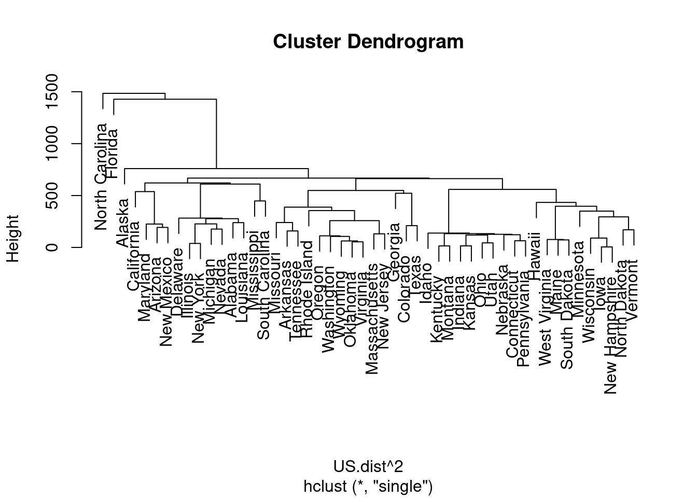
US.average<-hclust(US.dist^2, method="average")
plot(US.single)- US.dist 데이터를 hclust 함수를 활용하여 최단, 최장, 평균 거리법으로 군집화하고 덴드로그램을 그려보자. hclust 함수 안의 US.dist 데이터를 제곱한 이유는 거리의 차이를 많이 두어 군집이 나니ㅜ는 것을 쉽게 확인하기 위해서이다. method를 “single”, “complete”, “average”로 지정하여 최단, 최장, 평균 거리법을 실행할 수 있다. 그리고 해당 결과를 plot 함수로 덴드로그램을 그릴 수 있다.
- 덴드로그램에서 Height 값에 따라 선을 그어 적절한 군집수를 선정할 수 있다.
group<-cutree(US.average, k=6)
group## Alabama Alaska Arizona Arkansas California
## 1 1 1 2 1
## Colorado Connecticut Delaware Florida Georgia
## 2 3 1 4 2
## Hawaii Idaho Illinois Indiana Iowa
## 5 3 1 3 5
## Kansas Kentucky Louisiana Maine Maryland
## 3 3 1 5 1
## Massachusetts Michigan Minnesota Mississippi Missouri
## 6 1 5 1 2
## Montana Nebraska Nevada New Hampshire New Jersey
## 3 3 1 5 6
## New Mexico New York North Carolina North Dakota Ohio
## 1 1 4 5 3
## Oklahoma Oregon Pennsylvania Rhode Island South Carolina
## 6 6 3 6 1
## South Dakota Tennessee Texas Utah Vermont
## 5 2 2 3 5
## Virginia Washington West Virginia Wisconsin Wyoming
## 6 6 5 5 6- cutree함수로 계층적 군집의 결과를 이용하여 tree의 높이나 그룹의 수를 옵션으로 지정하여 원하는 수의 그룹으로 나눌 수 있다.
plot(US.average)
rect.hclust(US.average, k=6, border="red")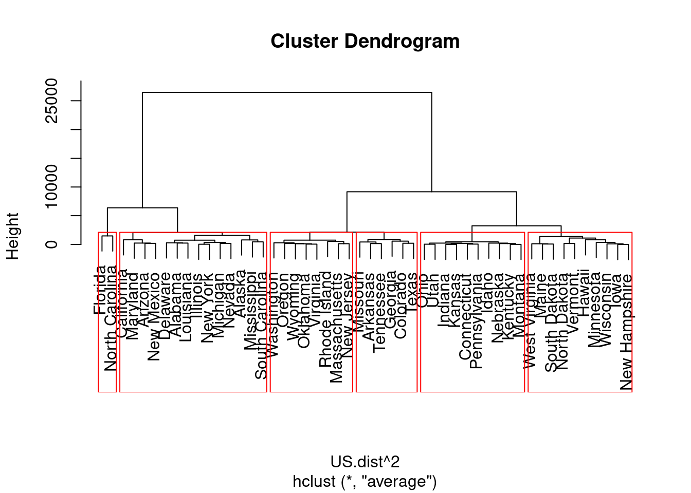
- 덴드로그램은 plot함수와 rect.hclust 함수를 이용하여 각각의 그룹을 사각형으로 구분지어 나타낼 수 있다.